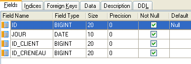
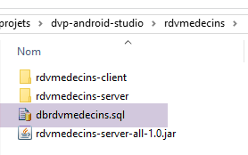
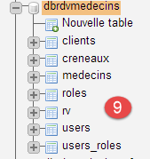
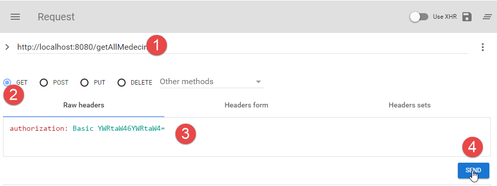
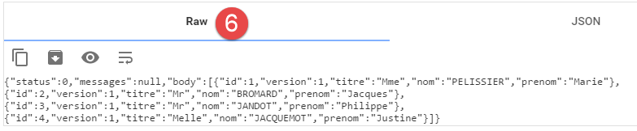
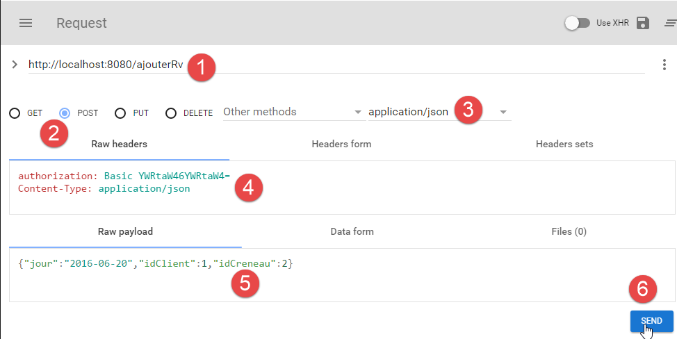
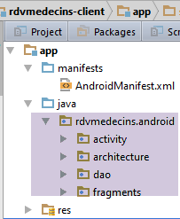
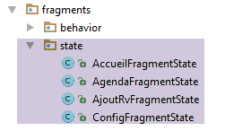
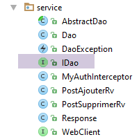

3. Case Study - Appointment Management
3.1. The Project
In the document [AngularJS / Spring 4 Tutorial], a client/server application was developed to manage doctor appointments. We will refer to this document as [rdvmedecins-angular] hereafter. The application had two types of clients:
- an HTML/CSS/JS client;
- an Android client;
The Android client was automatically generated from the HTML version of the client using the [Cordova] tool. The goal of this project is to recreate this Android client manually using the knowledge gained in the previous chapters.
Note an important difference between the two solutions:
- the one we are going to create will only work on Android tablets;
- in the [rdvmedecins-angular] version, the mobile web client (HTML/CSS/JS) works on any platform (Android, iOS, Windows); ## 3.2. The Android client views
There are four views.
Configuration view

Doctor and appointment date selection view

Appointment time slot selection view

Appointment client selection view

3.3. Project Architecture
We will use a client/server architecture similar to that in Example [Example-15] (see Section 1.16) of this document:

Asynchronous communication between the client and the server will be handled using the RxAndroid library.
3.4. The database
It does not play a fundamental role in this document. We provide it for informational purposes. We will call it [ dbrdvmedecins]. It is a MySQL5 database with four tables:
 |
3.4.1. The [MEDECINS] table
It contains information about the doctors managed by the [RdvMedecins] application.
 |  |
- ID: the doctor’s ID number—the table’s primary key
- VERSION: a number identifying the version of the row in the table. This number is incremented by 1 each time a change is made to the row.
- LAST_NAME: the doctor’s last name
- FIRST_NAME: the doctor's first name
- TITLE: their title (Ms., Mrs., Mr.) ### 3.4.2. The [CLIENTS] table
The clients of the various doctors are stored in the [CLIENTS] table:
 |  |
- ID: the client's ID number—the table's primary key
- VERSION: number identifying the version of the row in the table. This number is incremented by 1 each time a change is made to the row.
- LAST NAME: the client's last name
- FIRST NAME: the client’s first name
- TITLE: their title (Ms., Mrs., Mr.) ### 3.4.3. The [SLOTS] table
It lists the time slots when appointments are available:
 |
 |  |  |
- ID: ID number for the time slot - primary key of the table (row 8)
- VERSION: number identifying the version of the row in the table. This number is incremented by 1 each time a change is made to the row.
- DOCTOR_ID: ID number identifying the doctor to whom this time slot belongs – foreign key on the DOCTORS(ID) column.
- START_TIME: start time of the time slot
- MSTART: Start minute of the time slot
- HFIN: slot end time
- MFIN: End minutes of the slot
The second row of the [SLOTS] table (see [1] above) indicates, for example, that slot #2 begins at 8:20 a.m. and ends at 8:40 a.m. and belongs to doctor #1 (Ms. Marie PELISSIER).
3.4.4. The [RV] table
It lists the appointments made for each doctor:
 |  |
- ID: unique identifier for the appointment – primary key
- DAY: day of the appointment
- SLOT_ID: time slot of the appointment – foreign key on the [ID] field of the [SLOTS] table – determines both the time slot and the doctor involved.
- CUSTOMER_ID: the customer ID for whom the reservation is made – a foreign key on the [ID] field in the [CUSTOMERS] table
This table has a uniqueness constraint on the values of the joined columns (DAY, SLOT_ID):
If a row in the [RV] table has the value (DAY1, SLOT_ID1) for the columns (DAY, SLOT_ID), this value cannot appear anywhere else. Otherwise, this would mean that two appointments were booked at the same time for the same doctor. From a Java programming perspective, the database’s JDBC driver throws an SQLException when this occurs.
The row with ID equal to 3 (see [1] above) means that an appointment was booked for slot #20 and client #4 on 08/23/2006. The [SLOTS] table tells us that slot no. 20 corresponds to the time slot 4:20 PM – 4:40 PM and belongs to doctor no. 1 (Ms. Marie PELISSIER). The [CLIENTS] table tells us that client no. 4 is Ms. Brigitte BISTROU.
3.4.5. Generating the database
To create the tables and populate them, you can use the script [dbrdvmedecins.sql], which can be found in the examples archive |HERE|.
 |
With [WampServer] (see section 6.15), proceed as follows:
 |  |
- In [1], click on the [WampServer] icon and select the [PhpMyAdmin] option [2],
- in [3], in the window that opens, select the [Databases] link,
 |
- in [4-6], import an SQL file,
 |  |  |
- in [7], select the SQL script and in [8] execute it,
- in [9], the database tables have been created. Follow one of the links,
 |
- in [10], the table contents.
We will not return to this database again, but the reader is invited to follow its evolution throughout the tests, especially when the application is not working.
3.5. The Web Server / JSON
Here we focus on the server [1]. We will not develop it further. It has been detailed in the document [Spring MVC and Thymeleaf by Example]. Interested readers may refer to it. It was developed like the server in Example 15. Its source code is included in the examples. Here we will use its binary:
 |
In a command window, navigate to the folder containing the server binary:
...\rdvmedecins>dir
The volume in drive D is named Data
The volume’s serial number is 7A34-AE5F
Directory: D:\data\istia-1516\projects\dvp-android-studio\rdvmedecins
06/09/2016 10:50 <DIR> .
06/09/2016 10:50 <DIR> ..
07/06/2014 16:36 7,631 dbrdvmedecins.sql
06/08/2016 4:31 PM <DIR> rdvmedecins-client
06/08/2016 4:22 PM <DIR> doctorappointments-server
06/08/2016 4:23 PM 29,618,709 rdvmedecins-server-all-1.0.jar
Then, to start the server, enter the following command (the MySQL DBMS must already be running):
...\rdvmedecins>java -jar rdvmedecins-server-all-1.0.jar
. ____ _ __ _ _
/\\ / ___'_ __ _ _(_)_ __ __ _ \ \ \ \
( ( )\___ | '_ | '_| | '_ \/ _` | \ \ \ \
\\/ ___)| |_)| | | | | || (_| | ) ) ) )
' |____| .__|_| |_|_| |_\__, | / / / /
=========|_|==============|___/=/_/_/_/
:: Spring Boot :: (v1.0)
10:55:48.617 [main] INFO rdvmedecins.boot.Boot - Starting Boot v1.0 on st-PC (D:\data\istia-1516\projets\dvp-android-studio\rdvmedecins\rdvmedecins-server-all-1.0.jar started by st in D:\data\istia-1516\projets\dvp-android-studio\rdvmedecins)
10:55:48.621 [main] INFO rdvmedecins.boot.Boot - No active profile set, falling back to default profiles: default
10:55:48.662 [main] INFO o.s.b.c.e.AnnotationConfigEmbeddedWebApplicationContext - Refreshing org.springframework.boot.context.embedded.AnnotationConfigEmbeddedWebApplicationContext@7085bdee: startup date [Thu Jun 09 10:55:48 CEST 2016]; root of context hierarchy
10:55:49.948 [main] INFO o.s.b.c.e.t.TomcatEmbeddedServletContainer - Tomcat initialized with port(s): 8080 (http)
Jun 09, 2016 10:55:50 AM org.apache.catalina.core.StandardService startInternal
INFOS: Starting Tomcat service
June 09, 2016 10:55:50 AM org.apache.catalina.core.StandardEngine startInternal
INFO: Starting Servlet Engine: Apache Tomcat/8.0.33
June 9, 2016 10:55:50 AM org.apache.catalina.core.ApplicationContext log
INFO: Initializing Spring embedded WebApplicationContext
10:55:50.255 [localhost-startStop-1] INFO o.s.web.context.ContextLoader - Root
WebApplicationContext: initialization completed in 1596 ms
...
10:55:55.765 [localhost-startStop-1] INFO o.s.s.web.DefaultSecurityFilterChain
- Creating filter chain: ...]
10:55:55.785 [localhost-startStop-1] INFO o.s.b.c.e.ServletRegistrationBean - Mapping servlet: 'dispatcherServlet' to [/*]
10:55:55.791 [localhost-startStop-1] INFO o.s.b.c.e.FilterRegistrationBean - Mapping filter: 'springSecurityFilterChain' to: [/*]
...
10:55:56.249 [main] INFO o.s.w.s.m.m.a.RequestMappingHandlerMapping - Mapped "{[/getAllCreneaux/{idMedecin}],methods=[GET],produces=[application/json;charset=UTF-8]}" onto public java.lang.String rdvmedecins.controllers.RdvMedecinsController.getAllCreneaux(long,javax.servlet.http.HttpServletResponse,java.lang.String)
throws com.fasterxml.jackson.core.JsonProcessingException
10:55:56.252 [main] INFO o.s.w.s.m.m.a.RequestMappingHandlerMapping - Mapped "{[/getRvMedecinJour/{idMedecin}/{jour}],methods=[GET],produces=[application/json;charset=UTF-8]}" onto public java.lang.String rdvmedecins.controllers.RdvMedecinsController.getRvMedecinJour(long,java.lang.String,javax.servlet.http.HttpServletResponse,java.lang.String) throws com.fasterxml.jackson.core.JsonProcessingException
10:55:56.255 [main] INFO o.s.w.s.m.m.a.RequestMappingHandlerMapping - Mapped "{[/getCreneauById/{id}],methods=[GET],produces=[application/json;charset=UTF-8]}" onto public java.lang.String rdvmedecins.controllers.RdvMedecinsController.getCreneauById(long,javax.servlet.http.HttpServletResponse,java.lang.String) throws
com.fasterxml.jackson.core.JsonProcessingException
10:55:56.257 [main] INFO o.s.w.s.m.m.a.RequestMappingHandlerMapping - Mapped "{[/ajouterRv],methods=[POST],consumes=[application/json;charset=UTF-8],produces=[application/json;charset=UTF-8]}" onto public java.lang.String rdvmedecins.controllers.RdvMedecinsController.ajouterRv(rdvmedecins.models.PostAjouterRv,javax.servlet.http.HttpServletResponse,java.lang.String) throws com.fasterxml.jackson.core.JsonProcessingException
10:55:56.259 [main] INFO o.s.w.s.m.m.a.RequestMappingHandlerMapping - Mapped "{[/getAllClients],methods=[GET],produces=[application/json;charset=UTF-8]}" onto
public java.lang.String rdvmedecins.controllers.RdvMedecinsController.getAllClients(javax.servlet.http.HttpServletResponse,java.lang.String) throws com.fasterxml.jackson.core.JsonProcessingException
10:55:56.261 [main] INFO o.s.w.s.m.m.a.RequestMappingHandlerMapping - Mapped "{[/getClientById/{id}],methods=[GET],produces=[application/json;charset=UTF-8]}"
onto public java.lang.String rdvmedecins.controllers.RdvMedecinsController.getClientById(long, javax.servlet.http.HttpServletResponse, java.lang.String) throws com.fasterxml.jackson.core.JsonProcessingException
10:55:56.264 [main] INFO o.s.w.s.m.m.a.RequestMappingHandlerMapping - Mapped "{[/getMedecinById/{id}],methods=[GET],produces=[application/json;charset=UTF-8]}" onto public java.lang.String rdvmedecins.controllers.RdvMedecinsController.getMedecinById(long,javax.servlet.http.HttpServletResponse,java.lang.String) throws com.fasterxml.jackson.core.JsonProcessingException
10:55:56.266 [main] INFO o.s.w.s.m.m.a.RequestMappingHandlerMapping - Mapped "{[/getRvById/{id}],methods=[GET],produces=[application/json;charset=UTF-8]}" onto public java.lang.String rdvmedecins.controllers.RdvMedecinsController.getRvById(long,javax.servlet.http.HttpServletResponse,java.lang.String) throws com.fasterxml.jackson.core.JsonProcessingException
10:55:56.268 [main] INFO o.s.w.s.m.m.a.RequestMappingHandlerMapping - Mapped "{[/getAllMedecins],methods=[GET],produces=[application/json;charset=UTF-8]}" onto public java.lang.String rdvmedecins.controllers.RdvMedecinsController.getAllMedecins(javax.servlet.http.HttpServletResponse,java.lang.String) throws com.fasterxml.jackson.core.JsonProcessingException
10:55:56.270 [main] INFO o.s.w.s.m.m.a.RequestMappingHandlerMapping - Mapped "{[/supprimerRv],methods=[POST],consumes=[application/json;charset=UTF-8],produces=[application/json;charset=UTF-8]}" onto public java.lang.String rdvmedecins.controllers.RdvMedecinsController.supprimerRv(rdvmedecins.models.PostSupprimerRv,javax.servlet.http.HttpServletResponse,java.lang.String) throws com.fasterxml.jackson.core.JsonProcessingException
10:55:56.273 [main] INFO o.s.w.s.m.m.a.RequestMappingHandlerMapping - Mapped "{[/authenticate],methods=[GET],produces=[application/json;charset=UTF-8]}" onto public java.lang.String rdvmedecins.controllers.RdvMedecinsController.authenticate(javax.servlet.http.HttpServletResponse,java.lang.String) throws com.fasterxml.jackson.core.JsonProcessingException
10:55:56.276 [main] INFO o.s.w.s.m.m.a.RequestMappingHandlerMapping - Mapped "{[/getAgendaMedecinJour/{idMedecin}/{jour}],methods=[GET],produces=[application/json;charset=UTF-8]}" onto public java.lang.String rdvmedecins.controllers.RdvMedecinsController.getAgendaMedecinJour(long,java.lang.String,javax.servlet.http.HttpServletResponse,java.lang.String) throws com.fasterxml.jackson.core.JsonProcessingException
...
10:55:56.681 [main] INFO o.s.b.c.e.t.TomcatEmbeddedServletContainer - Tomcat started on port(s): 8080 (http)
10:55:56.686 [main] INFO rdvmedecins.boot.Boot - Started Boot in 8.231 seconds
The server displays numerous logs. We have included only those relevant to understanding the process above:
- lines 14–18: An embedded Tomcat server is launched on port 8080 of the machine. This server runs the appointment management web application. This application is actually a web service/JSON: it is queried via URLs and responds by sending a JSON string;
- line 24: the web service is secured using the [Spring Security] framework. The web service’s URLs are accessed by authenticating;
- Lines 29–44: the URLs exposed by the web service;
We will go into more detail about these.
3.5.2. Securing the web service
The URLs exposed by the web service are secured. The server expects the following header in the client’s HTTP request:
The expected code is the Base64 encoding [http://fr.wikipedia.org/wiki/Base64] of the string 'username:password'. In its initial state, the web service only accepts a user named 'admin' with the password 'admin'. For this particular user, the header above becomes the following line:
To send this HTTP header, we use the HTTP client [Advanced Rest Client], which is a Chrome browser plugin (see section 6.13). We will manually test the various URLs exposed by the web service to understand:
The URL [/getAllMedecins] retrieves the list of doctors:
 |
- in [1], the URL being queried;
- in [2], the HTTP method used for this request;
- in [3], the user's HTTP security header (admin, admin);
- in [4], the HTTP request is sent;
The server's response is as follows:
 |
- in [5], the formatted JSON response from the server;
 |
- in [6], the same response in raw format;
The form in [5] makes it easier to see the structure of the response. All responses from the web service are instances of the following [Response] class:
package rdvmedecins.android.dao.service;
import java.util.List;
public class Response<T> {
// ----------------- properties
// operation status
private int status;
// any error messages
private List<String> messages;
// response body
private T body;
// constructors
public Response() {
}
public Response(int status, List<String> messages, T body) {
this.status = status;
this.messages = messages;
this.body = body;
}
// getters and setters
...
}
- line 9: the response status. A value of 0 means there was no error; otherwise, an error occurred;
- line 11: a list of error messages if an error occurred;
- line 13: the response actually expected by the client;
The response to the URL [/getAllMedecins] is a JSON string of an object of type [Response<List<Medecin>>]. The [Medecin] class is as follows:
package rdvmedecins.android.dao.entities;
public class Doctor extends Person {
// default constructor
public Doctor() {
}
// constructor with parameters
public Doctor(String title, String lastName, String firstName) {
super(title, lastName, firstName);
}
public String toString() {
return String.format("Doctor[%s]", super.toString());
}
}
Line 3: The [Doctor] class extends the following [Person] class:
package rdvmedecins.android.dao.entities;
public class Person extends AbstractEntity {
// attributes of a person
private String title;
private String lastName;
private String lastName;
// default constructor
public Person() {
}
// constructor with parameters
public Person(String title, String lastName, String firstName) {
this.title = title;
this.lastName = lastName;
this.firstName = firstName;
}
// toString
public String toString() {
return String.format("Person[%s, %s, %s, %s, %s]", id, version, title, lastName, firstName);
}
// getters and setters
...
}
Line 3: The [Person] class extends the following [AbstractEntity] class:
package rdvmedecins.android.dao.entities;
import java.io.Serializable;
public class AbstractEntity implements Serializable {
private static final long serialVersionUID = 1L;
protected Long id;
protected Long version;
@Override
public int hashCode() {
int hash = 0;
hash += (id != null ? id.hashCode() : 0);
return hash;
}
// initialization
public AbstractEntity build(Long id, Long version) {
this.id = id;
this.version = version;
return this;
}
@Override
public boolean equals(Object entity) {
String class1 = this.getClass().getName();
String class2 = entity.getClass().getName();
if (!class2.equals(class1)) {
return false;
}
AbstractEntity other = (AbstractEntity) entity;
return this.id == other.id;
}
// getters and setters
...
}
Ultimately, the structure of a [Doctor] object is as follows:
and that of [Response<List<Doctor>>] is as follows:
Going forward, we will use these abbreviated definitions to describe the server’s response. Additionally, for the time being, we will no longer include screenshots. Simply review what we have just covered. We will return to screenshots when it is time to make a POST request. We will also present an execution example in the following format:
3.5.4. List of customers
|
Example:
3.5.5. List of a doctor's appointment slots
|
- [idMedecin]: ID of the doctor for whom you want the appointment slots;
- [startTime] : start time of the appointment;
- [start_time]: start time of the consultation;
- [hfin]: end time of the consultation;
- [endmin] : end minutes of the consultation;
For a time slot between 10:20 and 10:40, we have [starts, starts, ends, ends] = [10, 20, 10, 40].
Example:
3.5.6. List of a doctor's appointments
|
- [idMedic] : identifier of the doctor whose appointments are requested;
- URL [day]: day of the appointments in the format 'yyyy-mm-dd';
- Response [day]: same as above, but in the form of a Java date;
- [client]: the client for the appointment. Its structure was described earlier;
- [idClient]: the client's identifier;
- [slot]: the appointment slot. Its structure was described earlier;
- [slotId]: the slot identifier;
Example:
3.5.7. A doctor's schedule
|
- [doctorId]: identifier of the doctor whose appointments are wanted;
- URL [day] : day of the appointments in the format 'yyyy-mm-dd' ;
- [calendar] : doctor's calendar;
- [doctor] : the doctor in question. Its structure was defined previously;
- Response [day]: the day of the calendar in the form of a Java date;
- [doctorDaySlots]: an array of elements of type [DoctorDaySlot];
- [slot]: a slot. Its structure was described earlier;
- [appointment]: an appointment. Its structure was described earlier;
Example:
|
We have highlighted the case where there is an appointment in the slot and the case where there is none.
3.5.8. Get a doctor by their ID
|
- [doctorId]: the doctor's ID;
Example 1:
Example 2:
3.5.9. Get a client by ID
|
- [idClient]: the client ID;
Example 1:
Example 2:
3.5.10. Book a time slot using your ID
|
- [slotId]: the slot ID;
Example 1:
Note that the response does not include the doctor who owns the slot, only their ID.
Example 2:
3.5.11. Get an appointment by its ID
|
- [idRv]: the appointment ID;
Example 1:
Note that the response does not include the client or the appointment slot, but only their identifiers.
Example 2:
3.5.12. Add an appointment
The URL [/addAppointment] allows you to add an appointment. The information required for this addition (the day, the time slot, and the client) is sent via an HTTP POST request. We show how to make this request using the [Advanced Rest Client] tool.

- in [1], the URL being queried;
- in [2], it is queried via a POST request;
- in [3-4], we specify to the server that the values being posted are in JSON format;
- in [4], the HTTP authentication header;
- in [5], the information sent via the POST request. This is a JSON string containing:
- [day]: the day of the appointment in the format 'yyyy-mm-dd',
- [idClient]: the ID of the client for whom the appointment is being made,
- [idCreneau]: the identifier of the appointment time slot. Since a time slot belongs to a specific doctor, this also refers to the doctor;
- in [6], the request is sent;
The JSON string that is posted is that of the following [PostAjouterRv] object:
public class PostAjouterRv {
// post data
private String day;
private long clientId;
private long slotId;
// constructors
public PostAddAppointment() {
}
public PostAddAppointment(String day, long slotId, long clientId) {
this.day = day;
this.clientId = clientId;
this.slotId = slotId;
}
// getters and setters
...
}
The server's response is of type [Response<Rv>] [int status; List<String> messages; Rv rv], where [rv] is the added appointment.
The server's response to the request above is as follows:
 |
Note that some information is not included [idClient, idCreneau], but it can be found in the [client] and [creneau] fields. The important information is the ID of the added appointment (209). The web service could have simply returned this single piece of information.
3.5.13. Delete an appointment
This operation is also performed via a POST request:
|
The posted value is the JSON string of an object of type [PostSupprimerRv] as follows:
public class PostDeleteRv {
// post data
private long idRv;
// constructors
public PostSupprimerRv() {
}
public PostDeleteRv(long idRv) {
this.idRv = idRv;
}
// getters and setters
...
}
- Line 4: [idRv] is the ID of the appointment to be deleted.
Example 1:
Appointment #209 has been successfully deleted because [status=0].
Example 2:
3.6. The Android client
Now that the server [1] has been described in detail and is up and running, we will examine the Android client [2].
3.6.1. Android Studio Project Architecture
The project uses the architecture of the [client-android-skel] project (see section 1.17). In the Android client architecture shown above, there are three distinct layers:
- the [DAO] layer responsible for communication with the web service;
- the [views] responsible for communicating with the user;
- the [Activity] that acts as the link between the two previous blocks. The views are not aware of the [DAO] layer. They communicate only with the Activity.
This architecture is reflected in the Android Studio project for the Android client:
 |
- the [activity] package implements the activity;
- the [architecture] package includes the architectural elements we developed previously;
- the [dao] package implements the [DAO] layer;
- the [fragments] package implements the [views]; ### 3.6.2. Project Customization
 |
The [architecture/custom] folder contains the customizable elements of the architecture.
The [IMainActivity] interface is as follows:
package client.android.architecture.custom;
import client.android.architecture.core.ISession;
import client.android.dao.service.IDao;
public interface IMainActivity extends IDao {
// access to the session
ISession getSession();
// Change view
void navigateToView(int position, ISession.Action action);
// wait management
void beginWaiting();
void cancelWaiting();
// application constants -------------------------------------
// debug mode
boolean IS_DEBUG_ENABLED = true;
// maximum wait time for server response
int TIMEOUT = 1000;
// wait time before executing the client request
int DELAY = 000;
// Basic authentication
boolean IS_BASIC_AUTHENTIFICATION_NEEDED = true;
// fragment adjacency
int OFF_SCREEN_PAGE_LIMIT = 1;
// tab bar
boolean ARE_TABS_NEEDED = false;
// loading icon
boolean IS_WAITING_ICON_NEEDED = true;
// number of application fragments
int FRAGMENTS_COUNT = 4;
// number of views
int VIEW_CONFIG = 0;
int HOME_VIEW = 1;
int CALENDAR_VIEW = 2;
int VIEW_ADD_APPT = 3;
}
- lines 25, 28: customization of the [DAO] layer;
- line 31: this application makes authenticated requests to the server;
- line 40: a loading image is required;
- line 43: the application has four fragments;
- lines 46–49: the numbers of the four fragments;
- line 37: there are no tabs;
The base class [CoreState] for fragment states will be as follows:
package client.android.architecture.custom;
import client.android.architecture.core.MenuItemState;
import client.android.fragments.state.HomeFragmentState;
import client.android.fragments.state.AgendaFragmentState;
import client.android.fragments.state.AddRvFragmentState;
import client.android.fragments.state.ConfigFragmentState;
import com.fasterxml.jackson.annotation.JsonIgnoreProperties;
import com.fasterxml.jackson.annotation.JsonSubTypes;
import com.fasterxml.jackson.annotation.JsonTypeInfo;
@JsonIgnoreProperties(ignoreUnknown = true)
@JsonTypeInfo(use = JsonTypeInfo.Id.NAME, include = JsonTypeInfo.As.PROPERTY)
@JsonSubTypes({
@JsonSubTypes.Type(value = HomeFragmentState.class),
@JsonSubTypes.Type(value = AgendaFragmentState.class),
@JsonSubTypes.Type(value = AjoutRvFragmentState.class),
@JsonSubTypes.Type(value = ConfigFragmentState.class)
}
)
public class CoreState {
// fragment visited or not
protected boolean hasBeenVisited = false;
// state of the fragment's menu (if any)
protected MenuItemState[] menuOptionsState;
// getters and setters
...
}
- lines 15–18: the four fragments have a state:
 |
Finally, the session contains the data shared between fragments:
package client.android.architecture.custom;
import client.android.architecture.core.AbstractSession;
import client.android.dao.entities.DoctorSchedule;
import client.android.dao.entities.Client;
import client.android.dao.entities.Doctor;
import client.android.fragments.state.HomeFragmentState;
import client.android.fragments.state.AgendaFragmentState;
import client.android.fragments.state.AddAppointmentFragmentState;
import client.android.fragments.state.ConfigFragmentState;
import java.util.List;
public class Session extends AbstractSession {
// Elements that cannot be serialized to JSON must have the @JsonIgnore annotation
// list of doctors
private List<Doctor> doctors;
// list of clients
private List<Client> clients;
// a doctor's schedule for a given day
private DoctorScheduleAgenda schedule;
// position of the clicked item in the schedule
private int position;
// Appointment date in "yyyy-MM-dd" format
private String appointmentDay;
// Appointment day in French format "dd-MM-yyyy"
private String appointmentDay;
// getters and setters
...
}
- Lines 17–28: The session stores six pieces of information. We will explain their roles when necessary. ### 3.6.3. The [DAO] layer
 |
 |  |
- in [1], the entities encapsulated in the server's responses. These were presented in Section 3.5;
- in [2], the client components that handle communication with the server;
We will not revisit the components in [1]. They have already been presented. The reader is invited to refer back to Section 3.5 if necessary. We will examine the implementation of the [service] package. This will also lead us to discuss the implementation of secure communication between the client and the server.
3.6.3.1. Implementation of client/server communication
 |
The [WebClient] class is an AA component that describes:
- the URLs exposed by the web service;
- their parameters;
- their responses;
package rdvmedecins.android.dao.service;
import rdvmedecins.android.dao.entities.*;
import org.androidannotations.rest.spring.annotations.*;
import org.androidannotations.rest.spring.api.RestClientRootUrl;
import org.androidannotations.rest.spring.api.RestClientSupport;
import org.springframework.http.converter.json.MappingJackson2HttpMessageConverter;
import org.springframework.web.client.RestTemplate;
import java.util.List;
@Rest(converters = {MappingJackson2HttpMessageConverter.class})
public interface WebClient extends RestClientRootUrl, RestClientSupport {
// RestTemplate
public void setRestTemplate(RestTemplate restTemplate);
// list of doctors
@Get("/getAllDoctors")
public Response<List<Doctor>> getAllDoctors();
// list of clients
@Get("/getAllClients")
public Response<List<Client>> getAllClients();
// list of a doctor's available slots
@Get("/getAllSlots/{doctorId}")
public Response<List<Slot>> getAllSlots(@Path long doctorId);
// list of a doctor's appointments
@Get("/getDoctorAppointmentsDay/{doctorId}/{day}")
public Response<List<Appointment>> getDoctorAppointmentsByDay(@Path long doctorId, @Path String day);
// Client
@Get("/getClientById/{id}")
public Response<Client> getClientById(@Path long id);
// Doctor
@Get("/getDoctorById/{id}")
public Response<Doctor> getDoctorById(@Path long id);
// Rv
@Get("/getRvById/{id}")
public Response<Rv> getRvById(@Path long id);
// Slot
@Get("/getCreneauById/{id}")
public Response<TimeSlot> getTimeSlotById(@Path long id);
// Add an appointment
@Post("/addAppointment")
public Response<Rv> addAppointment(@Body PostAddAppointment post);
// delete an appointment
@Post("/deleteAppointment")
public Response<Rv> deleteAppointment(@Body PostDeleteAppointment post);
// Get a doctor's schedule
@Get(value = "/getDoctorScheduleDay/{doctorId}/{day}")
public Response<DoctorScheduleDay> getDoctorScheduleDay(@Path long doctorId, @Path String day);
}
- lines 19–60: all the URLs discussed in section 3.5 are present;
- line 16: the [RestTemplate] component from [Spring Android] on which client/server communication is based; #### 3.6.3.2. The [IDao] interface
 |
The [IDao] interface of the [DAO] layer is as follows:
package rdvmedecins.android.dao.service;
import rdvmedecins.android.dao.entities.*;
import rx.Observable;
import java.util.List;
public interface IDao {
// Web service URL
public void setWebServiceJsonUrl(String url);
// User
public void setUser(String user, String password);
// Client timeout
public void setTimeout(int timeout);
// list of clients
public Observable<List<Client>> getAllClients();
// list of doctors
public Observable<List<Doctor>> getAllDoctors();
// list of a doctor's time slots
public Observable<List<TimeSlot>> getAllTimeSlots(long doctorId);
// List of a doctor's appointments on a given day
public Observable<List<Appointment>> getDoctorAppointmentsByDay(long doctorId, String day);
// find a client identified by their ID
public Observable<Client> getClientById(long id);
// Find a doctor by their ID
public Observable<Doctor> getDoctorById(long id);
// Find an appointment identified by its ID
public Observable<Appointment> getAppointmentById(long id);
// find a time slot identified by its ID
public Observable<TimeSlot> getTimeSlotById(long id);
// add an appointment
public Observable<Rv> addAppointment(String day, long slotId, long clientId);
// delete an appointment
public Observable<Appointment> deleteAppointment(long appointmentId);
// business logic
public Observable<DoctorDailySchedule> getDoctorDailySchedule(long doctorId, String day);
// debug mode
void setDebugMode(boolean isDebugEnabled);
}
- line 10: to set the URL of the web service / JSON;
- line 13: to set the user for client/server communication. [user] is the user ID, [password] is the password;
- line 16: to set a maximum timeout for the server response;
- lines 18–49: each URL exposed by the web service corresponds to a method. They use the same method signatures as the AA [WebClient] component;
- line 52: to control the debug mode of the [DAO] layer; #### 3.6.3.3. The [Dao] class
 |
The [DAO] implementation of the previous [IDao] interface is as follows:
package client.android.dao.service;
import android.util.Log;
import client.android.dao.entities.*;
import org.androidannotations.annotations.AfterInject;
import org.androidannotations.annotations.Bean;
import org.androidannotations.annotations.EBean;
import org.androidannotations.rest.spring.annotations.RestService;
import org.springframework.http.client.ClientHttpRequestInterceptor;
import org.springframework.http.client.SimpleClientHttpRequestFactory;
import org.springframework.http.converter.json.MappingJackson2HttpMessageConverter;
import org.springframework.web.client.RestTemplate;
import rx.Observable;
import java.util.ArrayList;
import java.util.List;
@EBean(scope = EBean.Scope.Singleton)
public class Dao extends AbstractDao implements IDao {
// Web service client
@RestService
protected WebClient webClient;
// security
@Bean
protected MyAuthInterceptor authInterceptor;
// the RestTemplate
private RestTemplate restTemplate;
// RestTemplate factory
private SimpleClientHttpRequestFactory factory;
@AfterInject
public void afterInject() {
...
}
@Override
public void setUrlServiceWebJson(String url) {
...
}
@Override
public void setUser(String user, String password) {
...
}
@Override
public void setTimeout(int timeout) {
...
}
@Override
public void setBasicAuthentication(boolean isBasicAuthenticationNeeded) {
if (isDebugEnabled) {
Log.d(className, String.format("setBasicAuthentication thread=%s, isBasicAuthenticationNeeded=%s", Thread.currentThread().getName(), isBasicAuthenticationNeeded));
}
// authentication interceptor?
if (isBasicAuthenticationNeeded) {
// add the authentication interceptor
List<ClientHttpRequestInterceptor> interceptors = new ArrayList<ClientHttpRequestInterceptor>();
interceptors.add(authInterceptor);
restTemplate.setInterceptors(interceptors);
}
}
// private methods -------------------------------------------------
private void log(String message) {
if (isDebugEnabled) {
Log.d(className, message);
}
}
// Implementation of the IDao interface --------------------------------------------------------------------
@Override
public Observable<Response<List<Client>>> getAllClients() {
// log
log("getAllClients");
// result
return getResponse(new IRequest<Response<List<Client>>>() {
@Override
public Response<List<Client>> getResponse() {
return webClient.getAllClients();
}
});
}
@Override
public Observable<Response<List<Doctor>>> getAllDoctors() {
// log
log("getAllDoctors");
// result
return getResponse(new IRequest<Response<List<Doctor>>>() {
@Override
public Response<List<Doctor>> getResponse() {
return webClient.getAllDoctors();
}
});
}
@Override
public Observable<Response<List<TimeSlot>>> getAllTimeSlots(final long doctorId) {
// log
log("getAllSlots");
// result
return getResponse(new IRequest<Response<List<Creneau>>>() {
@Override
public Response<List<Creneau>> getResponse() {
return webClient.getAllSlots(doctorId);
}
});
}
@Override
public Observable<Response<List<Rv>>> getRvMedecinJour(final long idMedecin, final String jour) {
// log
log("getRvMedecinJour");
// result
return getResponse(new IRequest<Response<List<Rv>>>() {
@Override
public Response<List<Rv>> getResponse() {
return webClient.getRvMedecinJour(idMedecin, jour);
}
});
}
@Override
public Observable<Response<Client>> getClientById(final long id) {
// log
log("getClientById");
// result
return getResponse(new IRequest<Response<Client>>() {
@Override
public Response<Client> getResponse() {
return webClient.getClientById(id);
}
});
}
@Override
public Observable<Response<Doctor>> getDoctorById(final long id) {
// log
log("getMedecinById");
// result
return getResponse(new IRequest<Response<Doctor>>() {
@Override
public Response<Doctor> getResponse() {
return webClient.getDoctorById(id);
}
});
}
@Override
public Observable<Response<Rv>> getRvById(final long id) {
// log
log("getRvById");
// result
return getResponse(new IRequest<Response<Rv>>() {
@Override
public Response<Rv> getResponse() {
return webClient.getRvById(id);
}
});
}
@Override
public Observable<Response<Creneau>> getCreneauById(final long id) {
// log
log("getCreneauById");
// result
return getResponse(new IRequest<Response<Creneau>>() {
@Override
public Response<Creneau> getResponse() {
return webClient.getSlotById(id);
}
});
}
@Override
public Observable<Response<Rv>> addRv(final String day, final long slotId, final long clientId) {
// log
log("addRv");
// result
return getResponse(new IRequest<Response<Rv>>() {
@Override
public Response<Rv> getResponse() {
return webClient.addRv(new PostAddRv(day, slotId, clientId));
}
});
}
@Override
public Observable<Response<Rv>> deleteRv(final long idRv) {
// log
log("deleteRv");
// result
return getResponse(new IRequest<Response<Rv>>() {
@Override
public Response<Rv> getResponse() {
return webClient.deleteRv(new PostDeleteRv(idRv));
}
});
}
@Override
public Observable<Response<DoctorScheduleDay>> getDoctorScheduleDay(final long doctorId, final String day) {
// log
log("getAgendaMedecinJour");
// result
return getResponse(new IRequest<Response<DoctorScheduleDay>>() {
@Override
public Response<DailyDoctorSchedule> getResponse() {
return webClient.getAgendaMedecinJour(idMedecin, jour);
}
});
}
}
- lines 18–72: these are the default lines in the [Dao] class of the [client-android-skel] project;
- lines 74–216: implementation of the [IDao] interface. Methods that query the URLs exposed by the web service delegate this query to the AA [WebClient] component (lines 22–23);
- lines 58–63: if client/server exchanges are authenticated using basic authentication, an interceptor is added to the [RestTemplate] component. This will cause any HTTP request sent by the [RestTemplate] component to be intercepted by the [MyAuthInterceptor] class (lines 25–26);
The [MyAuthInterceptor] class is as follows:
package rdvmedecins.android.dao.security;
import org.androidannotations.annotations.Bean;
import org.androidannotations.annotations.EBean;
import org.springframework.http.HttpAuthentication;
import org.springframework.http.HttpBasicAuthentication;
import org.springframework.http.HttpHeaders;
import org.springframework.http.HttpRequest;
import org.springframework.http.client.ClientHttpRequestExecution;
import org.springframework.http.client.ClientHttpRequestInterceptor;
import org.springframework.http.client.ClientHttpResponse;
import java.io.IOException;
@EBean(scope = EBean.Scope.Singleton)
public class MyAuthInterceptor implements ClientHttpRequestInterceptor {
// user
private String user;
private String password;
public ClientHttpResponse intercept(HttpRequest request, byte[] body, ClientHttpRequestExecution execution) throws IOException {
HttpHeaders headers = request.getHeaders();
HttpAuthentication auth = new HttpBasicAuthentication(user, password);
headers.setAuthorization(auth);
return execution.execute(request, body);
}
public void setUser(String user, String password) {
this.user = user;
this.password = password;
}
}
- line 15: the [MyAuthInterceptor] class is an AA component of type [singleton];
- line 16: the [MyAuthInterceptor] class extends the Spring [ClientHttpRequestInterceptor] interface. This interface has one method, the [intercept] method on line 22. We extend this interface to intercept any HTTP request from the client. The [intercept] method takes three parameters;
- [HttpRequest request]: the intercepted HTTP request,
- [byte[] body]: its body, if it has one (posted values, for example),
- [ClientHttpRequestExecution execution]: the Spring component executing the request;
We intercept all HTTP requests from the Android client to add the HTTP authentication header presented in Section 3.5.
- line 23: we retrieve the HTTP headers of the intercepted request;
- line 24: we create the HTTP authentication header. The authentication method used (Base64 encoding of the string 'user:mdp') is provided by the Spring [HttpBasicAuthentication] class;
- line 25: the authentication header we just created is added to the current headers of the intercepted request;
- line 26: we continue executing the intercepted request. To summarize, the intercepted request has been enriched with the authentication header;
The implementations of the methods in the [IDao] interface all follow the same pattern. Let’s take the example of the [getAgendaMedecinJour] method:
@Override
public Observable<Response<AgendaMedecinJour>> getAgendaMedecinJour(final long idMedecin, final String jour) {
// log
log("getAgendaMedecinJour");
// result
return getResponse(new IRequest<Response<DoctorScheduleDay>>() {
@Override
public Response<AgendaMedecinJour> getResponse() {
return webClient.getDoctorScheduleForDay(doctorId, day);
}
});
}
- Line 2: The method expects two parameters:
- [idMedecin]: the ID of the doctor whose schedule is wanted;
- [day]: the day for which we want the schedule;
- line 6: we call the [getResponse] method of the parent class [AbstractDao]. This method expects a parameter of type [IRequest<T>], where T is the type returned by the [getAgendaMedecinJour] method on line 2, in this case [Response<AgendaMedecinJour>]. The [IRequest] interface has only one method: [getResponse] (line 8);
- lines 8–10: implementation of the [IRequest.getResponse] method. This method must return the result expected by the [getAgendaMedecinJour] method on line 2, of type [Response<AgendaMedecinJour>];
- line 9: the response is returned by the [webClient.getAgendaMedecinJour] method:
// retrieve a doctor's schedule
@Get(value = "/getAgendaMedecinJour/{idMedecin}/{jour}")
Response<AgendaMedecinJour> getAgendaMedecinJour(@Path long idMedecin, @Path String jour);
The parameters used in line 9 are those passed to the [getAgendaMedecinJour] method in line 2. For this reason, these parameters must have the final attribute;
3.6.4. The [MainActivity]
Server  |
 |
The [MainActivity] class is as follows:
package client.android.activity;
import android.util.Log;
import client.android.architecture.core.AbstractActivity;
import client.android.architecture.core.AbstractFragment;
import client.android.architecture.custom.IMainActivity;
import client.android.dao.entities.*;
import client.android.dao.service.Dao;
import client.android.dao.service.IDao;
import client.android.dao.service.Response;
import client.android.fragments.behavior.HomeFragment_;
import client.android.fragments.behavior.AgendaFragment_;
import client.android.fragments.behavior.AddAppointmentFragment_;
import client.android.fragments.behavior.ConfigFragment_;
import org.androidannotations.annotations.Bean;
import org.androidannotations.annotations.EActivity;
import rx.Observable;
import java.util.List;
@EActivity
public class MainActivity extends AbstractActivity {
// [DAO] layer
@Bean(Dao.class)
protected IDao dao;
// parent class ---------------------------------------
@Override
protected void onCreateActivity() {
// log
if (IS_DEBUG_ENABLED) {
Log.d(className, "onCreateActivity");
}
}
@Override
protected IDao getDao() {
return dao;
}
@Override
protected AbstractFragment[] getFragments() {
AbstractFragment[] fragments = new AbstractFragment[] {new ConfigFragment(), new HomeFragment(), new CalendarFragment(), new AddAppointmentFragment()};
return fragments;
}
@Override
protected CharSequence getFragmentTitle(int position) {
return null;
}
@Override
protected void navigateOnTabSelected(int position) {
}
@Override
protected int getFirstView() {
return IMainActivity.VUE_CONFIG;
}
// IDao interface -----------------------------------------------------
...
@Override
public Observable<Response<List<Client>>> getAllClients() {
return dao.getAllClients();
}
@Override
public Observable<Response<List<Doctor>>> getAllDoctors() {
return dao.getAllDoctors();
}
@Override
public Observable<Response<List<TimeSlot>>> getAllTimeSlots(long doctorId) {
return dao.getAllSlots(doctorId);
}
@Override
public Observable<Response<List<Appointment>>> getDoctorAppointmentsForDay(long doctorId, String day) {
return dao.getRvMedecinJour(idMedecin, day);
}
@Override
public Observable<Response<Client>> getClientById(long id) {
return dao.getClientById(id);
}
@Override
public Observable<Response<Doctor>> getDoctorById(long id) {
return dao.getDoctorById(id);
}
@Override
public Observable<Response<Rv>> getRvById(long id) {
return dao.getRvById(id);
}
@Override
public Observable<Response<Creneau>> getCreneauById(long id) {
return dao.getCreneauById(id);
}
@Override
public Observable<Response<Rv>> addRv(String day, long slotId, long clientId) {
return dao.addRv(day, slotId, clientId);
}
@Override
public Observable<Response<Rv>> deleteRv(long idRv) {
return dao.deleteRv(idRv);
}
@Override
public Observable<Response<DoctorScheduleDay>> getDoctorScheduleDay(long doctorId, String day) {
return dao.getDoctorSchedule(doctorId, day);
}
}
- lines 21–66: these lines are provided by default in the [client-android-skel] template;
- lines 66–119: implementation of the [IDao] interface. All methods delegate the work to the [DAO] layer on line 26;
- lines 42-46: the [getFragments] method returns the array of the application’s four fragments;
- lines 58-61: the configuration view is the first view to be displayed when the application starts; ### 3.6.5. The Session
 |
The [Session] class is used to store information that needs to be passed between fragments. It is as follows:
package rdvmedecins.android.architecture;
import rdvmedecins.android.dao.entities.AgendaMedecinJour;
import rdvmedecins.android.dao.entities.Client;
import rdvmedecins.android.dao.entities.Doctor;
import org.androidannotations.annotations.EBean;
import java.util.List;
@EBean(scope = EBean.Scope.Singleton)
public class Session {
// list of doctors
private List<Doctor> doctors;
// list of clients
private List<Client> clients;
// calendar
private DoctorDailyCalendar calendar;
// position of the clicked item in the calendar
private int position;
// Appointment date in the "yyyy-MM-dd" format
private String dayRv;
// Appointment day in French format "dd-MM-yyyy"
private String appointmentDay;
// getters and setters
...
}
- line 10: the [Session] class is an AA component instantiated as a single instance;
- lines 12–15: In this case study, we will assume that the lists of doctors and clients do not change. We will retrieve them when the application starts and store them in the session so that the fragments can use them;
- lines 20–23: the desired date for an appointment. It is handled in two formats: in French notation (line 23) within the Android client, and in English notation (line 21) for communication with the server;
- line 19: the position of the clicked element (add/delete link) on the calendar; ### 3.6.6. Configuration View Management #### 3.6.6.1. The view
The configuration view is the view displayed when the application starts:

The elements of the visual interface are as follows:
3.6.6.2. The fragment
The configuration view is managed by the following fragment [ConfigFragment]:
 |
package client.android.fragments.behavior;
import android.util.Log;
import android.view.View;
import android.widget.Button;
import android.widget.EditText;
import android.widget.TextView;
import client.android.R;
import client.android.architecture.core.AbstractFragment;
import client.android.architecture.core.ISession;
import client.android.architecture.core.MenuItemState;
import client.android.architecture.custom.CoreState;
import client.android.architecture.custom.IMainActivity;
import client.android.dao.entities.Client;
import client.android.dao.entities.Doctor;
import client.android.dao.service.Response;
import client.android.fragments.state.ConfigFragmentState;
import org.androidannotations.annotations.*;
import rx.functions.Action1;
import java.net.URI;
import java.util.List;
@EFragment(R.layout.config)
@OptionsMenu(R.menu.menu_config)
public class ConfigFragment extends AbstractFragment {
// Visual interface elements
@ViewById(R.id.edt_urlServiceRest)
protected EditText edtUrlServiceRest;
@ViewById(R.id.txt_errorUrlServiceRest)
protected TextView txtErrorUrlServiceRest;
@ViewById(R.id.txt_user_error)
protected TextView txtUserError;
@ViewById(R.id.edt_user)
protected EditText userEdit;
@ViewById(R.id.edt_password)
protected EditText edtPassword;
// user input
private String urlServiceRest;
private String user;
private String password;
// page validation
@OptionsItem(R.id.actionValider)
protected void doValidate() {
...
}
..
// implementation of parent class methods -------------------------------------------
...
}
- line 25: the fragment is associated with the following [menu_config] menu:
 |
<menu xmlns:android="http://schemas.android.com/apk/res/android"
xmlns:app="http://schemas.android.com/apk/res-auto"
xmlns:tools="http://schemas.android.com/tools"
tools:context=".activity.MainActivity1">
<item
android:id="@+id/menuActions"
app:showAsAction="ifRoom"
android:title="@string/menuActions">
<menu>
<item
android:id="@+id/actionValider"
android:title="@string/actionValider"/>
<item
android:id="@+id/actionCancel"
android:title="@string/actionCancel"/>
</menu>
</item>
</menu>
- lines 28–38: the elements of the visual interface;
- lines 41-43: the three form fields;
Clicking the [Validate] menu option is handled by the [doValidate] method:
// page validation
@OptionsItem(R.id.actionValider)
protected void doValider() {
// hide any previous error messages
txtErrorUrlServiceRest.setVisibility(View.INVISIBLE);
txtErrorUtilisateur.setVisibility(View.INVISIBLE);
// Check the validity of the entries
if (!isPageValid()) {
return;
}
// Set the web service URL
mainActivity.setUrlServiceWebJson(urlServiceRest);
// Enter the user
mainActivity.setUser(username, password);
// Start waiting—we will launch 2 asynchronous tasks
beginWaiting(2);
// doctors
executeInBackground(mainActivity.getAllDoctors(), new Action1<Response<List<Doctor>>>() {
@Override
public void call(Response<List<Doctor>> responseDoctors) {
// process the response
consumeDoctors(responseDoctors);
}
});
// clients
executeInBackground(mainActivity.getAllClients(), new Action1<Response<List<Client>>>() {
@Override
public void call(Response<List<Client>> responseClients) {
// process the response
consumeClients(responseClients);
}
});
}
private void consumeDoctors(Response<List<Doctor>> responseDoctors) {
// log
if (isDebugEnabled) {
Log.d(className, "consume doctors");
}
// error?
if (responseDoctors.getStatus() != 0) {
// message
showAlert(responseDoctors.getMessages());
// cancel
doCancel();
// return to UI
return;
}
// store the doctors in the session
session.setDoctors(responseDoctors.getBody());
}
private void consumeClients(Response<List<Client>> responseClients) {
// log
if (isDebugEnabled) {
log.d(className, "customer acquisition");
}
// error?
if (responseClients.getStatus() != 0) {
// message
showAlert(responseClients.getMessages());
// cancel
doCancel();
// return to UI
return;
}
// store clients in the session
session.setClients(responseClients.getBody());
}
- lines 8–10: the validity of the three form entries is checked. If the form is invalid, the process stops there;
- lines 11–14: the inputs required by the [DAO] layer are passed to the activity;
- line 16: the parent class is notified that two asynchronous tasks will be launched, and the wait is prepared;
- lines 17–24: the list of doctors is requested;
- line 18: the [executeInBackground] method expects two parameters:
- line 18: the process to be executed and observed is provided by the [mainActivity.getAllMedecins()] method;
- lines 18–24: the second parameter is an instance of type [Action1<T>], where T is the type returned by the observed process, here [Response<List<Medecin>>]
- line 22: when the response is received, it is passed to the [consumeMedecins] method on line 36;
- lines 25–33: after launching a first asynchronous task, we launch a second one to request the list of clients. We will therefore have two tasks running in parallel;
- lines 36–52: we have received the response from the doctors task. We process it;
- lines 42–49: First, we check if the server reported an error in the [status] field of the response;
- line 44: if there is an error, we display the messages that the server placed in the [messages] field of the response;
- line 46: we cancel all tasks;
- line 48: we return to the UI;
- line 51: if there was no error, the list of doctors is loaded into the session;
The validity of the input (line 8) is checked using the following method:
private boolean isPageValid() {
// Check the validity of the entered data
boolean error;
URI service;
// validity of the REST service URL
urlServiceRest = String.format("http://%s", edtUrlServiceRest.getText().toString().trim());
try {
service = new URI(urlServiceRest);
error = service.getHost() == null || service.getPort() == -1;
} catch (Exception ex) {
// log the error
error = true;
}
if (error) {
// display error
txtErrorUrlServiceRest.setVisibility(View.VISIBLE);
}
// user
user = edtUser.getText().toString().trim();
if (user.length() == 0) {
// display the error
txtErrorUser.setVisibility(View.VISIBLE);
// mark the error
error = true;
}
// password
password = edtPassword.getText().toString().trim();
// return
return !error;
}
The [beginWaiting] method (line 16) is as follows:
// Start waiting
protected void beginWaiting(int numberOfRunningTasks) {
// prepare to start the tasks
beginRunningTasks(numberOfRunningTasks);
// button and menu states
setAllMenuOptionsStates(false);
setMenuOptionsStates(new MenuItemState[]{new MenuItemState(R.id.menuActions, true), new MenuItemState(R.id.actionAnnuler, true)});
}
- line 4: we tell the parent task that we are going to launch [numberOfRunningTasks] tasks;
- line 6: all menu options are hidden;
- line 7: then makes the [Actions/Cancel] option visible;
Clicking the [Cancel] menu option is handled by the [doCancel] method:
@OptionsItem(R.id.actionAnnuler)
protected void doCancel() {
if (isDebugEnabled) {
Log.d(className, "Undo requested");
}
// cancel asynchronous tasks
cancelRunningTasks();
}
- line 8: we ask the parent class to cancel the asynchronous tasks; #### 3.6.6.3. Fragment lifecycle management
The fragment has the following [ConfigFragmentState] state:
package client.android.fragments.state;
import client.android.architecture.custom.CoreState;
public class ConfigFragmentState extends CoreState {
// visibility of the two error messages
private boolean txtErrorUrlServiceRestVisible;
private boolean txtErrorUserVisible;
// getters and setters
...
}
- When the parent class requests it, the fragment will save the visibility of its two error messages;
The fragment's lifecycle is implemented as follows:
// implementation of parent class methods -------------------------------------------
@Override
public CoreState saveFragment() {
// save fragment state
ConfigFragmentState state = new ConfigFragmentState();
state.setTxtErrorUrlServiceRestVisible(txtErrorUrlServiceRest.getVisibility() == View.VISIBLE);
state.setTxtErrorUserVisible(txtErrorUser.getVisibility() == View.VISIBLE);
return state;
}
@Override
protected int getNumView() {
return IMainActivity.VUE_CONFIG;
}
@Override
protected void initFragment(CoreState previousState) {
}
@Override
protected void initView(CoreState previousState) {
if (previousState == null) {
// First visit
// hide error messages
txtErrorUtilisateur.setVisibility(View.INVISIBLE);
txtErrorUrlServiceRest.setVisibility(View.INVISIBLE);
// menu
initMenu();
}
}
@Override
protected void updateOnSubmit(CoreState previousState) {
}
@Override
protected void updateOnRestore(CoreState previousState) {
// Restore visibility of error messages
ConfigFragmentState state = (ConfigFragmentState) previousState;
// not the first visit - restore error messages
txtUserError.setVisibility(state.isTxtUserErrorVisible() ? View.VISIBLE : View.INVISIBLE);
txtErrorUrlServiceRest.setVisibility(state.isTxtErrorUrlServiceRestVisible() ? View.VISIBLE : View.INVISIBLE);
}
@Override
protected void notifyEndOfUpdates() {
}
@Override
protected void notifyEndOfTasks(boolean runningTasksHaveBeenCanceled) {
// menu
initMenu();
// next view?
if (!runningTasksHaveBeenCanceled) {
mainActivity.navigateToView(IMainActivity.HOME_VIEW, ISession.Action.SUBMIT);
}
}
// private methods ------------------------------------------------
private void initMenu(){
// menu state
setAllMenuOptionsStates(true);
setMenuOptionsStates(new MenuItemState[]{new MenuItemState(R.id.actionAnnuler, false)});
}
- lines 2–9: when requested by its parent class, the fragment saves the state of its two error messages;
- lines 11-14: the fragment ID is [IMainActivity.VUE_CONFIG];
- lines 16–19: executed when the fragment is generated for the first time (previousState == null) or regenerated on subsequent occasions (previousState != null). Here, there is nothing to do;
- lines 21–31: executed when the view associated with the fragment is built for the first time (previousState == null) or rebuilt on subsequent occasions (previousState != null);
- lines 24–29: on the first visit, error messages are hidden and the menu is displayed without the [Cancel] action (lines 62–66);
- lines 33–35: executed when the fragment is reached via a [SUBMIT] operation. This never happens here;
- lines 37–44: executed when the fragment is reached via a [NAVIGATION] or [RESTORE] operation. The state of the error messages is restored from the previous state;
- lines 47–49: executed when all previous updates have been made. There is nothing further to do;
- lines 51–59: executed when all asynchronous tasks are complete;
The home view is as follows:

The elements of the visual interface are as follows:
3.6.7.2. The fragment
The home screen is managed by the following fragment [HomeFragment]:
 |
package client.android.fragments.behavior;
import android.util.Log;
import android.view.View;
import android.widget.ArrayAdapter;
import android.widget.Button;
import android.widget.DatePicker;
import android.widget.Spinner;
import client.android.R;
import client.android.architecture.core.AbstractFragment;
import client.android.architecture.core.ISession;
import client.android.architecture.core.MenuItemState;
import client.android.architecture.custom.CoreState;
import client.android.architecture.custom.IMainActivity;
import client.android.dao.entities.DoctorDailySchedule;
import client.android.dao.entities.Doctor;
import client.android.dao.service.Response;
import client.android.fragments.state.HomeFragmentState;
import org.androidannotations.annotations.*;
import rx.functions.Action1;
import java.util.Calendar;
import java.util.List;
import java.util.Locale;
@EFragment(R.layout.home)
@OptionsMenu(R.menu.menu_home)
public class HomeFragment extends AbstractFragment {
// UI elements
@ViewById(R.id.spinnerDoctors)
protected Spinner spinnerDoctors;
@ViewById(R.id.edt_AppointmentDay)
protected DatePicker edtAppDate;
// local data
private List<Doctor> doctors;
private Calendar calendar;
private String[] spinnerDocsDataSource;
// page validation
@OptionsItem(R.id.actionValider)
protected void doValidate() {
...
}
...
// implementation of parent class methods -------------------------------------
...
}
- line 26: the fragment is associated with the following [menu_accueil] menu:
 |
<menu xmlns:android="http://schemas.android.com/apk/res/android"
xmlns:app="http://schemas.android.com/apk/res-auto"
xmlns:tools="http://schemas.android.com/tools"
tools:context=".activity.MainActivity1">
<item
android:id="@+id/menuActions"
app:showAsAction="ifRoom"
android:title="@string/menuActions">
<menu>
<item
android:id="@+id/actionValider"
android:title="@string/actionValider"/>
<item
android:id="@+id/actionCancel"
android:title="@string/actionCancel"/>
</menu>
</item>
<item
android:id="@+id/menuNavigation"
app:showAsAction="ifRoom"
android:title="@string/menuNavigation">
<menu>
<item
android:id="@+id/navigationToConfig"
android:title="@string/navigationToConfig"/>
</menu>
</item>
</menu>
- lines 31–34: the visual interface elements;
- Line 37: the list of doctors;
- line 38: a calendar;
- line 39: the data source for the doctors spinner;
Clicking the [Validate] link is handled by the following [doValidate] method:
// page validation
@OptionsItem(R.id.actionValider)
protected void doValidate() {
// note the ID of the selected doctor
Long doctorId = doctors.get(spinnerDoctors.getSelectedItemPosition()).getId();
// Store the date in the session
String appointmentDate = String.format(new Locale("Fr-fr"), "%02d-%02d-%04d", edtAppointmentDate.getDayOfMonth(), edtAppointmentDate.getMonth() + 1, edtAppointmentDate.getYear());
session.setAppDate(appDate);
// convert to yyyy-MM-dd date format
String dayRv = String.format(new Locale("Fr-fr"), "%04d-%02d-%02d", edtJourRv.getYear(), edtJourRv.getMonth() + 1, edtJourRv.getDayOfMonth());
session.setDayRv(dayRv);
// Start waiting - we're going to launch 1 asynchronous task
beginWaiting(1);
// request the doctor's schedule
executeInBackground(mainActivity.getDoctorSchedule(doctorId, dayRv), new Action1<Response<DoctorSchedule>>() {
@Override
public void call(Response<DoctorDailySchedule> responseDoctorDailySchedule) {
// process the response
consumeAgenda(responseAgendaMedecinJour);
}
});
}
private void consumeAgenda(Response<AgendaMedecinJour> responseAgendaMedecinJour) {
// error?
if (responseAgendaMedecinJour.getStatus() != 0) {
// message
showAlert(responseAgendaMedecinJour.getMessages());
// cancel
doCancel();
// return to UI
return;
}
// add the appointment to the session
session.setAgenda(responseAgendaMedecinJour.getBody());
}
- line 5: retrieve the ID of the selected doctor;
- lines 7-8: we store the selected date in the session in French format;
- lines 10-11: we set the selected date in the session, in English format;
- line 13: we notify the parent class that we are about to launch an asynchronous task and prepare for the wait;
- lines 15–22: the doctor’s schedule is retrieved;
- line 15: the [executeInBackground] method expects two parameters:
- line 15: the process to be executed and observed is provided by the [mainActivity.getAgendaMedecinJour(idMedecin, dayRv)] method;
- lines 15–22: the second parameter is an instance of type [Action1<T>], where T is the type returned by the observed process, here [Response<AgendaMedecinJour>]
- line 20: when the response is received, it is passed to the [consumeAgenda] method on line 25;
- line 15: the [executeInBackground] method expects two parameters:
- lines 25–37: we have received the doctor’s schedule. We process it;
- lines 27–34: First, we check if the server reported an error in the [status] field of the response;
- line 29: if there is an error, we display the messages the server placed in the [messages] field of the response;
- line 31: cancel all tasks;
- line 33: we return to the UI;
- line 36: if there were no errors, the calendar is brought into focus;
The [beginWaiting] method (line 13) is as follows:
// start waiting
protected void beginWaiting(int numberOfRunningTasks) {
// Prepare to start the tasks
beginRunningTasks(numberOfRunningTasks);
// button and menu states
setAllMenuOptionsStates(false);
setMenuOptionsStates(new MenuItemState[]{new MenuItemState(R.id.menuActions, true), new MenuItemState(R.id.actionAnnuler, true)});
}
- line 4: we tell the parent task that we are going to launch [numberOfRunningTasks] tasks;
- line 6: all menu options are hidden;
- line 7: then makes the [Actions/Cancel] option visible;
Clicking the [Cancel] menu option is handled by the [doCancel] method:
@OptionsItem(R.id.actionAnnuler)
protected void doCancel() {
if (isDebugEnabled) {
Log.d(className, "Undo requested");
}
// cancel asynchronous tasks
cancelRunningTasks();
}
- line 8: we ask the parent class to cancel the asynchronous tasks;
Clicking the [Back to Settings] menu option is handled as follows:
@OptionsItem(R.id.navigationToConfig)
protected void navigationToConfig() {
// navigate to the configuration view
mainActivity.navigateToView(IMainActivity.VUE_CONFIG, ISession.Action.NAVIGATION);
}
- Line 4: We navigate to the configuration view using the [NAVIGATION] action. This means we want to restore the configuration view to the state we left it in; #### 3.6.7.3. Fragment Lifecycle Management
The fragment has the following [HomeFragmentState]:
package client.android.fragments.state;
import android.widget.ArrayAdapter;
import client.android.architecture.custom.CoreState;
import client.android.dao.entities.DoctorSlotDay;
public class HomeFragmentState extends CoreState {
// [Home] fragment state
// position of the selected doctor
private int selectedDoctorPosition;
// selected date
private int year;
private int month;
private int dayOfMonth;
// data source for the doctor spinner
private String[] doctorsSpinnerDataSource;
// constructors
public AccueilFragmentState() {
}
// getters and setters
...
}
- line 11: returns the selected item from the list of doctors;
- lines 13–15: returns the selected date from the calendar;
- line 17: retrieves the data source for the list of doctors;
The fragment's lifecycle is implemented as follows:
// implementation of parent class methods -------------------------------------
@Override
public CoreState saveFragment() {
// save the view
HomeFragmentState state = new HomeFragmentState();
state.setSelectedDoctorPosition(doctorSpinner.getSelectedItemPosition());
state.setDayOfMonth(edtJourRv.getDayOfMonth());
state.setMonth(edtJourRv.getMonth());
state.setYear(edtJourRv.getYear());
state.setSpinnerMedecinsDataSource(spinnerMedecinsDataSource);
return state;
}
@Override
protected int getNumView() {
return IMainActivity.HOME_VIEW;
}
@Override
protected void initFragment(CoreState previousState) {
// retrieve the doctors from the session
doctors = session.getDoctors();
// First visit?
if (previousState == null) {
// build the array displayed by the spinner
spinnerDocsDataSource = new String[docs.size()];
int i = 0;
for (Doctor doctor : doctors) {
spinnerDocsDataSource[i] = String.format("%s %s %s", doc.getTitle(), doc.getFirstName(), doc.getLastName());
i++;
}
} else {
// not first visit
HomeFragmentState state = (HomeFragmentState) previousState;
spinnerMedecinsDataSource = state.getSpinnerMedecinsDataSource();
}
// the calendar
calendar = Calendar.getInstance();
}
@Override
protected void initView(CoreState previousState) {
// bind the doctors spinner to its data source
ArrayAdapter<String> doctorsDataAdapter = new ArrayAdapter<>(activity, android.R.layout.simple_spinner_item, doctorsSpinnerDataSource);
dataAdapterDoctors.setDropDownViewResource(android.R.layout.simple_spinner_dropdown_item);
spinnerDoctors.setAdapter(doctorsDataAdapter);
// Minimum date in the calendar to today
edtJourRv.setMinDate(calendar.getTimeInMillis());
// First visit?
if (previousState == null) {
// menu
initMenu();
}
}
@Override
protected void updateOnSubmit(CoreState previousState) {
// menu
initMenu();
}
@Override
protected void updateOnRestore(CoreState previousState) {
// Restore the current session state
HomeFragmentState state = (HomeFragmentState) previousState;
// selection in the doctors spinner
spinnerMedecins.setSelection(state.getSelectedMedecinPosition());
// calendar
edtJourRv.updateDate(state.getYear(), state.getMonth(), state.getDayOfMonth());
}
@Override
protected void notifyEndOfUpdates() {
}
@Override
protected void notifyEndOfTasks(boolean runningTasksHaveBeenCanceled) {
// called after all tasks have been completed or canceled
// menu state
initMenu();
// Next view?
if (!runningTasksHaveBeenCanceled) {
mainActivity.navigateToView(IMainActivity.VUE_AGENDA, ISession.Action.SUBMIT);
}
}
// private methods ------------------------------------------------
private void initMenu() {
// menu state
setAllMenuOptionsStates(true);
setMenuOptionsStates(new MenuItemState[]{new MenuItemState(R.id.actionAnnuler, false)});
}
- lines 2–9: when requested by its parent class, the fragment saves the state of the following elements:
- line 6: the selected position in the list of doctors;
- lines 7–9: the day of the month, the month, and the year of the date selected in the calendar;
- line 10: the data source for the doctors spinner;
- lines 14-17: the fragment ID is [IMainActivity.VUE_ACCUEIL];
- lines 19–39: executed when the fragment is generated for the first time (previousState == null) or regenerated on subsequent occasions (previousState != null);
- lines 25–31: for a first visit, the data source for the doctors spinner is constructed;
- lines 33–35: for subsequent visits, the spinner’s data source is retrieved from the fragment’s previous state;
- lines 41-54: executed when the view associated with the fragment is built for the first time (previousState==null) or rebuilt on subsequent visits (previousState !=null);
- lines 50–53: for the first visit, the menu is displayed without the [Cancel] action (lines 88–92);
- lines 43–48: for all visits, whether the first or not, the doctors’ spinner is associated with its source (lines 44–46) and the minimum date on the calendar is set to today’s date (line 48);
- lines 56–60: executed when the fragment is reached via a [SUBMIT] operation. The user is coming from the [CONFIG] view. The menu is reset to its initial state;
- lines 62–70: executed when the fragment is reached via a [NAVIGATION] or [RESTORE] operation;
- line 67: the doctors spinner is reset to the last selected doctor;
- line 69: the calendar is set to the last selected date;
- lines 72–74: executed once all previous updates have been completed. There is nothing further to do;
- lines 76–85: executed when all asynchronous tasks are complete;
The home screen looks like this:

The elements of the visual interface are as follows:
3.6.8.2. The fragment
The Calendar view is managed by the following fragment [AgendaFragment]:
 |
package client.android.fragments.behavior;
import android.util.Log;
import android.view.View;
import android.widget.ArrayAdapter;
import android.widget.ListView;
import android.widget.TextView;
import android.widget.Toast;
import client.android.R;
import client.android.architecture.core.AbstractFragment;
import client.android.architecture.core.ISession;
import client.android.architecture.core.MenuItemState;
import client.android.architecture.custom.CoreState;
import client.android.architecture.custom.IMainActivity;
import client.android.dao.entities.DoctorSchedule;
import client.android.dao.entities.DoctorDailySlot;
import client.android.dao.entities.Doctor;
import client.android.dao.entities.Rv;
import client.android.dao.service.Response;
import client.android.fragments.state.AgendaFragmentState;
import org.androidannotations.annotations.EFragment;
import org.androidannotations.annotations.OptionsItem;
import org.androidannotations.annotations.OptionsMenu;
import org.androidannotations.annotations.ViewById;
import rx.functions.Action1;
@EFragment(R.layout.agenda)
@OptionsMenu(R.menu.menu_agenda)
public class AgendaFragment extends AbstractFragment {
// UI elements
@ViewById(R.id.txt_title2_agenda)
protected TextView txtTitle2;
@ViewById(R.id.listViewAgenda)
protected ListView lstSlots;
// calendar displayed by the fragment
private DailyDoctorSchedule agenda;
// ListView information for time slots
private int firstPosition;
private int top;
// appointment deleted or not
private boolean appointmentDeleted;
// number of the slot added or deleted
private int slotNumber;
// Update the calendar after an addition or deletion
private void updateCalendar() {
...
}
...
// Implementation of parent class methods ------------------------------------------------------
...
}
- line 27: the fragment is associated with the following [menu_agenda] menu:
 |
<menu xmlns:android="http://schemas.android.com/apk/res/android"
xmlns:app="http://schemas.android.com/apk/res-auto"
xmlns:tools="http://schemas.android.com/tools"
tools:context=".activity.MainActivity1">
<item
android:id="@+id/menuActions"
app:showAsAction="ifRoom"
android:title="@string/menuActions">
<menu>
<item
android:id="@+id/cancelAction"
android:title="@string/cancelAction"/>
<item
android:id="@+id/actionCalendar"
android:title="@string/actionAgenda"/>
</menu>
</item>
<item
android:id="@+id/menuNavigation"
app:showAsAction="ifRoom"
android:title="@string/menuNavigation">
<menu>
<item
android:id="@+id/navigationToConfig"
android:title="@string/navigationToConfig"/>
<item
android:id="@+id/navigationToHome"
android:title="@string/navigationToHome"/>
</menu>
</item>
</menu>
- lines 32–35: visual interface elements;
- lines 37-45: global data for the methods; ##### 3.6.8.2.1. Method [updateAgenda]
The (re)generation of the list of calendar slots is required in several places in the code. It has been factored into the following private method [updateAgenda]:
// update the calendar after an addition/deletion
private void updateAgenda() {
// (re)generation of the calendar slots
// the agenda is retrieved from the session and stored in a field of the fragment
agenda = session.getAgenda();
// Regenerate the ListView of time slots
ArrayAdapter<DaytimeDoctorSlot> adapter = new SlotListAdapter(activity, R.layout.doctor_slot,
agenda.getDoctorSlotsDay(), this);
slotList.setAdapter(adapter);
// reposition to the correct location in the ListView
slotList.setSelectionFromTop(firstPosition, top);
}
- line 5: the calendar is retrieved from the session and stored in the [calendar] field of the fragment;
- lines 7–9: We define the adapter for the [ListView] component. This adapter defines both the data source for the [ListView] and the display model for each of its items. We will present this adapter shortly;
- line 11: we return to the previous position in the calendar. This is because we only see a portion of the day’s time slots. If we add or remove an appointment in the last slot, the code above will refresh the page to display the new calendar. This refresh causes the view to return to the first slot, which is undesirable. Line 5 resolves this issue. A description of this solution can be found at the URL [http://stackoverflow.com/questions/3014089/maintain-save-restore-scroll-position-when-returning-to-a-listview];
The [ListCreneauxAdapter] class is used to define a row in the [ListView]:

As shown above, the display differs depending on whether the time slot has an appointment or not. The code for the [ListCreneauxAdapter] class is as follows:
...
public class ListCreneauxAdapter extends ArrayAdapter<CreneauMedecinJour> {
// the array of time slots
private CreneauMedecinJour[] creneauxMedecinJour;
// the execution context
private Context context;
// the ID of the layout for displaying a row in the list of time slots
private int layoutResourceId;
// click listener
private AgendaFragment view;
// constructor
public ListCreneauxAdapter(Context context, int layoutResourceId, CreneauMedecinJour[] creneauxMedecinJour,
AgendaFragment view) {
super(context, layoutResourceId, dailyDoctorSlots);
// store the information
this.daytimeSlots = daytimeSlots;
this.context = context;
this.layoutResourceId = layoutResourceId;
this.view = view;
// Sort the array of doctor's slots by time
Arrays.sort(daytimeDoctorSlots, new MyComparator());
}
@Override
public View getView(final int position, View convertView, ViewGroup parent) {
...
}
// Sorting the slot array
class MyComparator implements Comparator<DoctorSlotDay> {
...
}
}
- Line 3: The [ListCreneauxAdapter] class must extend a predefined adapter for [ListView]s, in this case the [ArrayAdapter] class, which, as its name suggests, populates the [ListView] with an array of objects, in this case of type [CreneauMedecinJour]. Let’s review the code for this entity:
public class DayDoctorSlot implements Serializable {
private static final long serialVersionUID = 1L;
// fields
private Creneau creneau;
private Rv rv;
...
}
- The [CreneauMedecinJour] class contains a time slot (line 5) and a potential appointment (line 6) or null if there is no appointment;
Back to the code for the [ListCreneauxAdapter] class:
- line 15: the constructor takes four parameters:
- the current Android activity,
- the XML file defining the content of each [ListView] element,
- the array of the doctor's time slots,
- the view itself;
- Line 24: The array of time slots is sorted in ascending order by time;
The [getView] method is responsible for generating the view corresponding to a row in the [ListView]. This view consists of three elements:
 |
The code for the [getView] method is as follows:
@Override
public View getView(final int position, View convertView, ViewGroup parent) {
// move to the correct slot
DoctorSlotDay doctorSlot = doctorSlotsDay[position];
// create the row
View row = ((Activity) context).getLayoutInflater().inflate(layoutResourceId, parent, false);
// the time slot
TextView txtSlot = (TextView) row.findViewById(R.id.txt_Slot);
txtSlot.setText(String.format("%02d:%02d-%02d:%02d", doctorSlot.getSlot().getStartTime(), doctorSlot
.getTimeSlot().getStartMinute(), doctorTimeSlot.getTimeSlot().getStartHour(), doctorTimeSlot.getTimeSlot().getEndMinute(), doctorTimeSlot.getTimeSlot().getEndHour()));
// the client
TextView txtClient = (TextView) row.findViewById(R.id.txt_Client);
String text;
if (doctorAppointment.getRv() != null) {
Client client = doctorAppointment.getRv().getClient();
text = String.format("%s %s %s", client.getTitle(), client.getFirstName(), client.getLastName());
} else {
text = "";
}
txtClient.setText(text);
// the link
final TextView btnValider = (TextView) row.findViewById(R.id.btn_Valider);
if (doctorSlot.getRv() == null) {
// add
btnValider.setText(R.string.btn_ajouter);
btnValider.setTextColor(context.getResources().getColor(R.color.blue));
} else {
// delete
btnValider.setText(R.string.btn_delete);
btnValider.setTextColor(context.getResources().getColor(R.color.red));
}
// link listener
btnValider.setOnClickListener(new OnClickListener() {
@Override
public void onClick(View v) {
// Pass the information to the calendar view
view.doValidate(position, btnValidate.getText().toString());
}
});
// return the row
return row;
}
- line 2: position is the row number to be generated in the [ListView]. It is also the slot number in the [creneauxMedecinJour] array. We ignore the other two parameters;
- line 4: we retrieve the time slot to display in the [ListView] row;
- line 6: the row is constructed based on its XML definition
 |
The code for [creneau_medecin.xml] is as follows:
<?xml version="1.0" encoding="utf-8"?>
<RelativeLayout xmlns:android="http://schemas.android.com/apk/res/android"
android:id="@+id/RelativeLayout1"
android:layout_width="match_parent"
android:layout_height="match_parent"
android:background="@color/wheat" >
<TextView
android:id="@+id/txt_Creneau"
android:layout_width="100dp"
android:layout_height="wrap_content"
android:layout_marginTop="20dp"
android:layout_marginLeft="20dp"
android:text="@string/txt_dummy" />
<TextView
android:id="@+id/txt_Client"
android:layout_width="200dp"
android:layout_height="wrap_content"
android:layout_alignBaseline="@+id/txt_Creneau"
android:layout_marginLeft="20dp"
android:layout_toRightOf="@+id/txt_Creneau"
android:text="@string/txt_dummy" />
<TextView
android:id="@+id/btn_Valider"
android:layout_width="wrap_content"
android:layout_height="wrap_content"
android:layout_alignBaseline="@+id/txt_Client"
android:layout_marginLeft="20dp"
android:layout_toRightOf="@+id/txt_Client"
android:text="@string/btn_validate"
android:textColor="@color/blue" />
</RelativeLayout>
|
- lines 8–10: the time slot [1] is constructed;
- lines 12–20: the client ID [2] is constructed;
- line 23: if the time slot has no appointment;
- lines 25-26: the blue [Add] link is created;
- lines 29-30: otherwise, the red [Delete] link is created;
- lines 33-40: regardless of the link type [Add / Delete], the view’s [doValider] method will handle the click on the link. The method will receive two arguments:
- the number of the slot that was clicked,
- the label of the link that was clicked;
- line 42: we return the line we just created.
Note that it is the [doValider] method of the [AgendaFragment] fragment that handles the links. It is as follows:
// Click on an [Add / Delete] link
public void doValider(int slotNumber, String text) {
// operation in progress?
if (numberOfRunningTasks != 0) {
Toast.makeText(activity, "An operation is in progress. Please wait or Cancel...", Toast.LENGTH_SHORT).show();
return;
}
// note the scroll position to return to it
// read [http://stackoverflow.com/questions/3014089/maintain-save-restore-scroll-position-when-returning-to-a-listview]
// position of the first element, whether fully visible or not
firstPosition = lstCreneaux.getFirstVisiblePosition();
// Y offset of this element relative to the top of the ListView
// Measure the height of any hidden portion
View v = lstCreneaux.getChildAt(0);
top = (v == null) ? 0 : v.getTop();
// We also note the number of the slot clicked
this.slotNumber = slotNumber;
// depending on the link text, we do different things
if (text.equals(getResources().getString(R.string.lnk_ajouter))) {
doAdd();
} else {
doDelete();
}
}
- The [doValider] method receives two pieces of information:
- the number of the slot that was clicked;
- the text (Add / Delete) of the link that was clicked;
- lines 4–7: clicking the [Delete / Add] links is disabled if there are asynchronous tasks in progress. This is a design choice that simplifies code writing. It is open to discussion;
- lines 11–15: we store the information (firstPosition, top) from the slot ListView in fields within the fragment so that the private method [updateAgenda] can regenerate it with the same scroll position;
- line 17: we store the number of the clicked slot;
- lines 19–23: depending on the text of the clicked link, we add or remove an item; ##### 3.6.8.2.2. Method [doDelete]
The [doSupprimer] method ensures the removal of the appointment from the clicked slot:
// Delete an appointment
private void doDelete() {
// wait for two tasks to finish
beginWaiting(2);
// delete the appointment in the background
appointmentDeleted = false;
// ID of the appointment to be deleted
long idRv = agenda.getDoctorSlotsDay()[slotNumber].getAppointment().getId();
// Delete using an asynchronous task
executeInBackground(mainActivity.deleteAppointment(idAppointment), new Action1<Response<Appointment>>() {
@Override
public void call(Response<Rv> responseRv) {
// consume the result
consumeRv(responseRv);
}
});
}
// consuming a response
private void consumeRv(Response<Rv> responseRv) {
// error?
if (responseRv.getStatus() != 0) {
// message
showAlert(responseRv.getMessages());
// cancel
doCancel();
// return to UI
return;
}
// Note that the appointment has been deleted
appointmentDeleted = true;
// request the most recent calendar
executeInBackground(
mainActivity.getToday'sDoctorSchedule(agenda.getDoctor().getId(), session.getDayAppointment()),
new Action1<Response<DailyDoctorSchedule>>() {
@Override
public void call(Response<DailyDoctorSchedule> responseDailyDoctorSchedule) {
// Process the response
consumeAgenda(responseAgendaMedecinJour);
}
});
}
// consuming an agenda
private void consumeAgenda(Response<AgendaMedecinJour> responseAgendaMedecinJour) {
// error?
if (responseAgendaMedecinJour.getStatus() != 0) {
// message
showAlert(responseAgendaMedecinJour.getMessages());
// cancel
doCancel();
// return to UI
return;
}
// add the appointment to the session
session.setAgenda(responseAgendaMedecinJour.getBody());
// update the view's calendar
updateAgenda();
}
- line 4: we notify the parent class that we are going to launch two asynchronous tasks and begin waiting for these two tasks to complete;
- line 8: retrieve the ID of the appointment to be deleted. The server needs this information;
- lines 9–18: we request the deletion of the appointment via an asynchronous task;
- line 10: the [executeInBackground] method expects two parameters:
- line 10: the process to be executed and observed is provided by the [mainActivity.deleteRv(idRv)] method;
- lines 10–17: the second parameter is an instance of type [Action1<T>], where T is the type returned by the observed process, here [Response<Rv>]
- line 15: when the response is received, it is passed to the [consumeRv] method on line 21;
- line 10: the [executeInBackground] method expects two parameters:
- lines 21–44: we have received the response from the asynchronous task. We process it;
- lines 23–30: First, we check if the server has reported an error in the [status] field of the response;
- line 25: if there is an error, we display the messages that the server placed in the [messages] field of the response;
- line 27: we cancel all tasks;
- line 29: return to the UI;
- line 32: if there was no error, we note that the appointment has been deleted;
- lines 34–43: rather than simply deleting the appointment from the calendar currently displayed by the fragment, we request the doctor’s new calendar. Since the application is multi-user, other users may also have modified the doctor’s calendar. Therefore, it’s best to use the most recent version;
- lines 34–43, 47–61: we repeat what was done in the [AccueilFragment] fragment, this time using information retrieved from the session;
The [beginWaiting] method (line 4) is as follows:
// start waiting
protected void beginWaiting(int numberOfRunningTasks) {
// prepare to launch the tasks
beginRunningTasks(numberOfRunningTasks);
// button and menu states
setAllMenuOptionsStates(false);
setMenuOptionsStates(new MenuItemState[]{new MenuItemState(R.id.menuActions, true), new MenuItemState(R.id.actionAnnuler, true)});
}
- line 4: we tell the parent task that we are going to launch [numberOfRunningTasks] tasks;
- line 6: all menu options are hidden;
- line 7: then make the [Actions/Cancel] option visible; ##### 3.6.8.2.3. Method [doCancel]
Clicking the [Cancel] menu option is handled by the [doAnnuler] method:
@OptionsItem(R.id.actionAnnuler)
protected void doCancel() {
if (isDebugEnabled) {
Log.d(className, "Cancel requested");
}
// cancel asynchronous tasks
cancelRunningTasks();
}
- line 7: we ask the parent class to cancel the asynchronous tasks; ##### 3.6.8.2.4. Menu option [Return to configuration]
Clicking the [Back to Configuration] menu option is handled as follows:
@OptionsItem(R.id.navigationToConfig)
protected void navigationToConfig() {
// navigate to the configuration view
mainActivity.navigateToView(IMainActivity.VUE_CONFIG, ISession.Action.NAVIGATION);
}
- Line 4: We navigate to the configuration view using the [NAVIGATION] action. This means we want to restore the configuration view to the state we left it in; ##### 3.6.8.2.5. Menu option [Back to Home]
Clicking the [Back to Home] menu option is handled similarly:
@OptionsItem(R.id.navigationToAccueil)
protected void navigationToHome() {
// navigate to the home view
mainActivity.navigateToView(IMainActivity.HOME_VIEW, ISession.Action.NAVIGATION);
}
3.6.8.3. Fragment Lifecycle Management
The fragment has the following state [AgendaFragmentState]:
package client.android.fragments.state;
import android.widget.ArrayAdapter;
import client.android.architecture.custom.CoreState;
import client.android.dao.entities.DoctorAppointmentDay;
public class AgendaFragmentState extends CoreState {
// view title
private String title;
// ListView
private int firstPosition;
private int top;
// constructors
public AgendaFragmentState() {
}
public AgendaFragmentState(String title) {
this.title = title;
}
// getters and setters
...
}
- line 10: the title displayed at the top of the view;
- lines 12-13: enables scrolling of the ListView displaying the doctor's available slots;
The fragment's lifecycle is implemented as follows:
// implementation of parent class methods ------------------------------------------------------
@Override
public CoreState saveFragment() {
// save state
AgendaFragmentState state = new AgendaFragmentState();
state.setTitle(txtTitle2.getText().toString());
// note the scroll position to return to it
// read [http://stackoverflow.com/questions/3014089/maintain-save-restore-scroll-position-when-returning-to-a-listview]
// position of the first element, whether fully visible or not
firstPosition = lstCreneaux.getFirstVisiblePosition();
// Y offset of this element relative to the top of the ListView
// measures the height of the potentially hidden portion
View v = lstCreneaux.getChildAt(0);
top = (v == null) ? 0 : v.getTop();
// store all of this
state.setTop(top);
state.setFirstPosition(firstPosition);
return state;
}
@Override
protected int getNumView() {
return IMainActivity.VUE_AGENDA;
}
@Override
protected void initFragment(CoreState previousState) {
// First visit?
if (previousState != null) {
// Not the first visit
AgendaFragmentState state = (AgendaFragmentState) previousState;
// and the ListView data
firstPosition = state.getFirstPosition();
top = state.getTop();
}
}
@Override
protected void initView(CoreState previousState) {
}
@Override
protected void updateOnSubmit(CoreState previousState) {
// retrieve the agenda
agenda = session.getAgenda();
// generate the page title
Doctor doctor = agenda.getDoctor();
txtTitle2.setText(String.format("Appointment for %s %s %s on %s", doctor.getTitle(), doctor.getFirstName(),
doctor.getLastName(), session.getAppointmentDay()));
// menu state
initMenu();
}
@Override
protected void updateOnRestore(CoreState previousState) {
// regenerate the page title
AgendaFragmentState state = (AgendaFragmentState) previousState;
txtTitle2.setText(state.getTitle());
}
@Override
protected void notifyEndOfUpdates() {
// regenerate the list of time slots
updateAgenda();
}
@Override
protected void notifyEndOfTasks(boolean runningTasksHaveBeenCanceled) {
// menu state
initMenu();
// If the task was canceled but the appointment has been deleted, update the local calendar
if (runningTasksHaveBeenCanceled && appointmentDeleted) {
// delete the appointment from the local calendar (could not access the global calendar)
agenda.getDoctorSlotsToday()[slotNumber].setAppointment(null);
// update the user interface
updateAgenda();
}
}
// private methods ------------------------------------------------
private void initMenu() {
// menu state
setAllMenuOptionsStates(true);
setMenuOptionsStates(new MenuItemState[]{new MenuItemState(R.id.actionAnnuler, false)});
}
- lines 2–19: when requested by its parent class, the fragment saves the state of the following elements:
- line 6: the title displayed at the top of the view;
- lines 7–17: the information (top, firstPosition) that will allow the ListView’s scrolling to be restored;
- lines 21–24: the fragment ID is [IMainActivity.VUE_AGENDA];
- lines 26–35: executed when the fragment is generated for the first time (previousState == null) or regenerated on subsequent visits (previousState != null);
- lines 30–34: if this is not the first visit to the fragment, we retrieve the information (top, firstPosition) needed to restore the ListView’s scrolling state;
- lines 38–40: executed when the view associated with the fragment is constructed for the first time (previousState == null) or reconstructed on subsequent visits (previousState != null). There is nothing to do here because the ListView of the slots will be generated by the private method [updateAgenda] (lines 61-65);
- lines 42–52: executed when the fragment is reached via a [SUBMIT] operation. We are coming from the [HOME] view;
- line 45: we retrieve the agenda set by [AccueilFragment];
- lines 47–49: the view title is generated;
- the ListView of time slots will be generated by the private method [updateAgenda] (lines 61-65);
- lines 54–59: executed when the fragment is reached via a [NAVIGATION] or [RESTORE] operation;
- lines 57-58: the view title is regenerated;
- the ListView of time slots will be generated by the private method [updateAgenda] (lines 61–65);
- lines 72–74: executed when all previous updates have been completed. The ListView of time slots is updated because this update is necessary regardless of how the fragment is accessed;
- lines 67–77: executed when all asynchronous tasks are complete;
- line 70: the menu is reset to its default state (lines 82–86);
- line 72: there were two asynchronous tasks. We check if the first one (deleting the appointment) succeeded, despite a cancellation;
- line 74: if so, the appointment is deleted from the local calendar
- line 75: and update the display of the calendar; ### 3.6.9. Handling the add-appointment view #### 3.6.9.1. The view
The view for adding an appointment is as follows:

The elements of the visual interface are as follows:
3.6.9.2. The fragment
The view for adding an appointment is managed by the following fragment [AjoutRvFragment]:
 |
package client.android.fragments.behavior;
import android.util.Log;
import android.widget.ArrayAdapter;
import android.widget.Spinner;
import android.widget.TextView;
import client.android.R;
import client.android.architecture.core.AbstractFragment;
import client.android.architecture.core.ISession;
import client.android.architecture.core.MenuItemState;
import client.android.architecture.custom.CoreState;
import client.android.architecture.custom.IMainActivity;
import client.android.dao.entities.*;
import client.android.dao.service.Response;
import client.android.fragments.state.AddRvFragmentState;
import org.androidannotations.annotations.EFragment;
import org.androidannotations.annotations.OptionsItem;
import org.androidannotations.annotations.OptionsMenu;
import org.androidannotations.annotations.ViewById;
import rx.functions.Action1;
import java.util.List;
import java.util.Locale;
@EFragment(R.layout.ajout_rv)
@OptionsMenu(R.menu.menu_ajout_rv)
public class AddRvFragment extends AbstractFragment {
// Visual interface elements
@ViewById(R.id.spinnerClients)
protected Spinner spinnerClients;
@ViewById(R.id.txt_title2_addRv)
protected TextView txtTitle2;
// clients
private List<Client> clients;
// local data
private Slot slot;
private Doctor doctor;
private boolean appointmentAdded;
private Appointment appointment;
private String[] clientDataSource;
// page validation
@OptionsItem(R.id.actionValider)
protected void doValidate() {
...
}
...
// implementation of parent class methods ----------------------------------
...
}
- line 26: the fragment is associated with the following menu [menu_ajout_rv]:
 |
<menu xmlns:android="http://schemas.android.com/apk/res/android"
xmlns:app="http://schemas.android.com/apk/res-auto"
xmlns:tools="http://schemas.android.com/tools"
tools:context=".activity.MainActivity1">
<item
android:id="@+id/menuActions"
app:showAsAction="ifRoom"
android:title="@string/menuActions">
<menu>
<item
android:id="@+id/actionValider"
android:title="@string/actionValider"/>
<item
android:id="@+id/actionCancel"
android:title="@string/actionCancel"/>
</menu>
</item>
<item
android:id="@+id/menuNavigation"
app:showAsAction="ifRoom"
android:title="@string/menuNavigation">
<menu>
<item
android:id="@+id/navigationToConfig"
android:title="@string/navigationToConfig"/>
<item
android:id="@+id/navigationToHome"
android:title="@string/navigationToHome"/>
<item
android:id="@+id/navigationToCalendar"
android:title="@string/navigationToAgenda"/>
</menu>
</item>
</menu>
- lines 30–33: the elements of the visual interface;
- line 36: the list of clients;
- line 43: the data source for the client spinner;
Clicking the [Validate] link is handled by the following [doValidate] method:
// clients
private List<Client> clients;
// local data
private Slot slot;
private Doctor doctor;
private boolean appointmentAdded;
private Appointment appointment;
private String[] clientDataSource;
...
// page validation
@OptionsItem(R.id.actionValider)
protected void doValidate() {
// retrieve the selected client
Client client = clients.get(spinnerClients.getSelectedItemPosition());
// Start waiting for 2 asynchronous tasks
beginWaiting(2);
// add the appointment
appointmentAdded = false;
executeInBackground(
mainActivity.addAppointment(session.getDayAppointment(), slot.getId(), client.getId()),
new Action1<Response<Rv>>() {
@Override
public void call(Response<Rv> responseRv) {
// consume the response
consumeRv(responseRv);
}
});
}
// Consume a Response<Rv> object
void consumeRv(Response<Rv> responseRv) {
// error?
if (responseRv.getStatus() != 0) {
// message
showAlert(responseRv.getMessages());
// cancel
doCancel();
// return to UI
return;
}
// note that the appointment has been added
appointmentAdded = true;
// save the appointment
this.rv = responseRv.getBody();
// request the new calendar
executeInBackground(mainActivity.getAgendaMedecinJour(session.getAgenda().getMedecin().getId(), session.getDayRv()), new Action1<Response<AgendaMedecinJour>>() {
@Override
public void call(Response<DailyDoctorSchedule> responseDailyDoctorSchedule) {
// process the response
consumeAgenda(responseAgendaMedecinJour);
}
});
}
// Consume a Response<AgendaMedecinJour> object
private void consumeAgenda(Response<AgendaMedecinJour> responseAgendaMedecinJour) {
// Error?
if (responseAgendaMedecinJour.getStatus() != 0) {
// message
showAlert(responseAgendaMedecinJour.getMessages());
// cancel
doCancel();
// return to UI
return;
}
// add the appointment to the session
session.setAgenda(responseAgendaMedecinJour.getBody());
}
- line 13: when the [doValider] method begins, fields 2, 5, 6, and 9 have been initialized during the fragment's lifecycle. We'll see how;
- line 15: we retrieve the [Client] entity corresponding to the element selected in the client spinner;
- line 17: we notify the parent class that we are going to launch two asynchronous tasks and prepare for the wait;
- line 19: initially, the appointment has not yet been added to the doctor’s calendar;
- lines 20–30: we request that the server add an appointment;
- line 20: the [executeInBackground] method expects two parameters:
- line 20: the process to be executed and observed is provided by the method [mainActivity.addRv(session.getDayRv(), slot.getId(), client.getId())];
- lines 22–29: the second parameter is an instance of type [Action1<T>], where T is the type returned by the observed process, here [Response<Rv>]
- line 27: when the response is received, it is passed to the [consumeRV] method on line 33;
- line 20: the [executeInBackground] method expects two parameters:
- lines 33–56: we have received the response from the server. We process it;
- lines 35–42: First, we check if the server reported an error in the [status] field of the response;
- line 37: if there is an error, we display the messages that the server placed in the [messages] field of the response;
- line 39: we cancel all tasks;
- line 41 : we return to the UI;
- line 44: if there was no error, we note that the appointment has been added;
- line 46: the added appointment is stored in a field of the fragment;
- lines 47–55: as was done when deleting an appointment, after adding the appointment, request the doctor’s most recent schedule from the server;
- lines 47–56, 59–71: this code has been encountered several times before;
The [beginWaiting] method (line 17) is as follows:
// start waiting
protected void beginWaiting(int numberOfRunningTasks) {
// prepare to launch the tasks
beginRunningTasks(numberOfRunningTasks);
// button and menu states
setAllMenuOptionsStates(false);
setMenuOptionsStates(new MenuItemState[]{new MenuItemState(R.id.menuActions, true), new MenuItemState(R.id.actionAnnuler, true)});
}
- line 4: we tell the parent task that we are going to launch [numberOfRunningTasks] tasks;
- line 6: all menu options are hidden;
- line 7: then makes the [Actions/Cancel] option visible;
Clicking the [Cancel] menu option is handled by the [doCancel] method:
@OptionsItem(R.id.actionAnnuler)
protected void doCancel() {
if (isDebugEnabled) {
Log.d(className, "Undo requested");
}
// cancel asynchronous tasks
cancelRunningTasks();
}
- line 7: we ask the parent class to cancel the asynchronous tasks;
Back navigation is handled by the following three methods:
@OptionsItem(R.id.navigationToConfig)
protected void navigateToConfig() {
// navigate to the configuration view
mainActivity.navigateToView(IMainActivity.VUE_CONFIG, ISession.Action.NAVIGATION);
}
@OptionsItem(R.id.navigationToHome)
protected void navigateToHome() {
// navigate to the configuration view
mainActivity.navigateToView(IMainActivity.VUE_ACCUEIL, ISession.Action.NAVIGATION);
}
@OptionsItem(R.id.navigationToAgenda)
protected void navigateToCalendar() {
// navigate to the calendar view
mainActivity.navigateToView(IMainActivity.AGENDA_VIEW, ISession.Action.NAVIGATION);
}
3.6.9.3. Fragment Lifecycle Management
The fragment has the following state [AjoutRvFragmentState]:
package client.android.fragments.state;
import client.android.architecture.custom.CoreState;
// fragment state AjoutRvFragment
public class AjoutRvFragmentState extends CoreState {
// selected client position
private int selectedClientPosition;
// view title
private String title;
// data source for the client spinner
private String[] clientSpinnerDataSource;
// getters and setters
...
}
The fragment's lifecycle is implemented as follows:
// implementation of parent class methods ----------------------------------
@Override
public CoreState saveFragment() {
// save view
AjoutRvFragmentState state = new AjoutRvFragmentState();
state.setTitle(txtTitle2.getText().toString());
state.setSelectedClientPosition(spinnerClients.getSelectedItemPosition());
state.setSpinnerClientsDataSource(spinnerClientsDataSource);
return state;
}
@Override
protected int getNumView() {
return IMainActivity.VUE_AJOUT_RV;
}
@Override
protected void initFragment(CoreState previousState) {
// retrieve clients in session
clients = session.getClients();
// First visit?
if (previousState == null) {
// We create the array displayed by the spinner
spinnerClientsDataSource = new String[clients.size()];
int i = 0;
for (Client client : clients) {
spinnerClientsDataSource[i] = String.format("%s %s %s", client.getTitle(), client.getFirstName(), client.getLastName());
i++;
}
} else {
// not first visit
AjoutRvFragmentState state = (AjoutRvFragmentState) previousState;
spinnerClientsDataSource = state.getSpinnerClientsDataSource();
}
}
@Override
protected void initView(CoreState previousState) {
// bind the spinner to its data source
ArrayAdapter<String> dataAdapterClients = new ArrayAdapter<>(activity, android.R.layout.simple_spinner_item,
spinnerClientsDataSource);
dataAdapterClients.setDropDownViewResource(android.R.layout.simple_spinner_dropdown_item);
spinnerClients.setAdapter(dataAdapterClients);
// First visit?
if (previousState == null) {
// menu
initMenu();
}
}
@Override
protected void updateOnSubmit(CoreState previousState) {
// retrieve the slot number to be reserved in the session
int position = session.getPosition();
// retrieve the doctor's calendar from the session
Doctor'sDailySchedule agenda = session.getAgenda();
// retrieve the doctor and the time slot for the appointment
doctor = calendar.getDoctor();
slot = agenda.getDoctorSlotList()[position].getSlot();
// build the second header of the page
String day = session.getDayApp();
txtTitle2.setText(String.format(Locale.FRANCE,
"Appointment booking for %s %s %s on %s for slot %02d:%02d-%02d:%02d", doctor.getTitle(),
doctor.getFirstName(), doctor.getLastName(), day, slot.getStartHour(), slot.getStartMinute(), slot.getEndHour(),
slot.getEndTime()));
// client selection
spinnerClients.setSelection(0);
// menu
initMenu();
}
@Override
protected void updateOnRestore(CoreState previousState) {
// restore previous state
AjoutRvFragmentState state = (AjoutRvFragmentState) previousState;
// title
txtTitle2.setText(state.getTitle());
// spinner
spinnerClients.setSelection(state.getSelectedClientPosition());
}
@Override
protected void notifyEndOfUpdates() {
}
@Override
protected void notifyEndOfTasks(boolean runningTasksHaveBeenCanceled) {
// menu state
initMenu();
// Next view?
if (!runningTasksHaveBeenCanceled) {
mainActivity.navigateToView(IMainActivity.VUE_AGENDA, ISession.Action.SUBMIT);
return;
}
// Cancellation occurred - has the appointment already been added?
if (appointmentAdded) {
// update the local calendar (we didn't get the global calendar)
DailyDoctorSchedule schedule = session.getSchedule();
calendar.getDailyDoctorSlots()[session.getPosition()].setAppointment(appointment);
// display the calendar
mainActivity.navigateToView(IMainActivity.VUE_AGENDA, ISession.Action.SUBMIT);
return;
}
}
// private methods -------------------
private void initMenu() {
// menu state
setAllMenuOptionsStates(true);
setMenuOptionsStates(new MenuItemState[]{new MenuItemState(R.id.actionAnnuler, false)});
}
- lines 2–10: when requested by its parent class, the fragment saves the state of the following elements:
- line 6: the title at the top of the view;
- line 7: the position of the selected item in the customer spinner;
- line 8: the data source of the client spinner;
- lines 12–15: the fragment ID is [IMainActivity.VUE_AJOUT_RV];
- lines 17–35: executed when the fragment is generated for the first time (previousState == null) or regenerated on subsequent occasions (previousState != null);
- line 20: the list of customers is retrieved from the session and placed in a fragment field;
- lines 22–30: for a first visit, the data source for the customer spinner is constructed;
- lines 32–33: for subsequent visits, the data source for the customer spinner is retrieved from the fragment’s previous state;
- lines 37–49: executed when the view associated with the fragment is built for the first time (previousState == null) or rebuilt on subsequent occasions (previousState != null);
- lines 40–43: in all cases, the client spinner is associated with its data source;
- lines 45–48: for the first visit, the menu is displayed without the [Cancel] action (lines 107–111);
- lines 51-70: executed when the fragment is reached via a [SUBMIT] operation. We are coming from the [CALENDAR] view;
- line 54: we retrieve the slot number where we will schedule an appointment;
- lines 56–59: we retrieve the [Doctor] and [Time Slot] entities required to add this appointment and place them in fields within the fragment;
- lines 61–65: using this information, we can construct the view title;
- line 67: the client spinner is set to its first item;
- line 69: the menu is set to its initial state (without the [Cancel] option);
- lines 72-80: executed when the fragment is reached via a [NAVIGATION] or [RESTORE] operation;
- line 77: the view title is regenerated;
- line 79: the client spinner is reset to the last selected client;
- lines 82–84: executed when all previous updates have been completed. There is nothing further to do here;
- lines 86–104: executed when all asynchronous tasks are complete;
- line 89: the menu is reset to its default state;
- lines 91–94: if the tasks completed normally, return to the [CALENDAR] view via a [SUBMIT] (here, this could also have been a NAVIGATION action);
- lines 96–103: if the tasks ended with a cancellation, we still check whether the appointment was added (this would mean that retrieving the new calendar failed);
- lines 98-99: if the appointment has been added;
- lines 98-99: the appointment returned by the server is added to the current calendar, the one that is active;
- line 101: we return to the [AGENDA] view via a [SUBMIT] (here, this could also have been a NAVIGATION-type action);
Perform the following tests:
- use the application under normal conditions and verify that it works;
- Rotate the device for each view and verify that each one is restored correctly;
- Add a wait of a few seconds in [IMainActivity];
- Next, cancel the tasks and verify that the result matches the expected outcome;
- rotate the device during wait periods and verify that the tasks are properly canceled and that there are no crashes;
- Change the fragment order in [IMainActivity] and verify that the application continues to function;